В разделе “Введение в регрессию” вы познакомитесь с основами линейной регрессии.
После завершения этого раздела вы сможете:
Понять, как Гальтон разработал линейную регрессию.
Рассчитать и интерпретировать корреляцию выборки.
При необходимости стратифицировать набор данных.
Поймите, что такое двумерное нормальное распределение.
Объясните, что означает термин “объясненная дисперсия” “variance explained”
Интерпретируйте две линии регрессии.
7.1.1 Motivating Example: Moneyball
Основные правила бейсбола
Бейсбол — это командная игра, в которой две команды из 9 игроков каждая соревнуются друг с другом, чередуя роли нападения и защиты. Цель игры — набрать как можно больше очков (забегов), продвигая игроков по базам и возвращая их на домашнюю базу. Игра состоит из девяти иннингов (отрезков), в каждом из которых обе команды получают возможность сыграть в нападении и защите. Вот ключевые аспекты правил:
Игровое поле и базы: Игровое поле имеет форму четверти круга с четырьмя базами, расположенными по углам алмаза (ромба) — первая, вторая, третья и домашняя база. Игроки должны поочередно касаться каждой базы, чтобы сделать «забег» (очко).
Питчер и бьющий: Обороняющаяся команда имеет «питчера», который подает мяч, и защищающих игроков, которые ловят отбитые мячи. Нападающая команда ставит «бьющего» (баттера), который пытается отбить подачу. Если бьющий успешно отбивает мяч и достигает базы, это называется «хит» (hit).
Забеги (runs): Игрок, который достигает всех четырех баз и возвращается на домашнюю базу, засчитывает забег (очко).
Ауты — это ключевой элемент игры в бейсбол, который используется для завершения нападения команды-соперника. Каждая команда в защите должна сделать три аута, чтобы завершить иннинг и перейти в нападение. Существует несколько способов сделать ауты:
Способы, как можно сделать аут:
Страйкаут (strikeout):
Питчер подает мяч в страйковую зону (зона, ограниченная по высоте от колен до пояса бьющего и по ширине домашней базы), и бьющий не отбивает мяч.
Бьющий получает страйк (strike), если не отбил мяч, или сделал замах, но промахнулся.
Если бьющий накапливает три страйка (трехкратное неудачное отбивание или промах), то происходит «страйкаут», и игрок выбывает.
Ловля мяча на лету (flyout):
Если бьющий отбил мяч, и защитник поймал его на лету, не дав ему коснуться земли, бьющий получает аут.
Аут на базе (tag out):
Если бегущий игрок пытается продвинуться на следующую базу, и его касаются мячом до того, как он достигнет базы, происходит аут. Для этого защитник должен держать мяч и коснуться бегущего игрока.
Форсированный аут (force out):
Если бьющий отбил мяч и побежал к первой базе, защитник может сделать аут, просто наступив на первую базу с мячом в руках до того, как бьющий ее достигнет. Это называется форсированным аутом, потому что бегущий обязан двигаться на следующую базу, и его могут выбить при форсированной ситуации.
Аут при игре на базах (force play):
В ситуациях, когда у игроков на базах нет другого выбора, кроме как бежать на следующую базу (например, когда бьющий отбивает мяч и движется к первой базе, заставляя других игроков продвигаться), защитники могут выбить игроков, доставив мяч к базе, на которую они должны бежать, раньше, чем они ее достигнут.
Важные моменты:
Команде в защите нужно сделать три аута, чтобы закончить иннинг. После этого команды меняются ролями.
Ауты — это способ защиты предотвратить заработок очков (забегов) нападающей команды, сводя к минимуму количество игроков, которые смогут безопасно продвигаться по базам.
Пример: Питчер бросает мяч, бьющий промахивается три раза — страйкаут, и это один аут. Затем другой игрок отбивает мяч, защитник ловит его на лету — flyout, это второй аут. Если защитник успевает доставить мяч на базу до того, как бегущий игрок ее достигнет — это третий аут.
Таким образом, ауты играют важнейшую роль в прекращении нападения команды и контроле игры.
Иннинги и победа: Игра состоит из девяти иннингов. Команда, которая наберет больше очков (забегов) к концу девятого иннинга, выигрывает.
Основные показатели sabermetrics
Sabermetrics — это статистический анализ бейсбола, который использует продвинутые метрики для оценки эффективности игроков и команд. Основные показатели sabermetrics:
SLG измеряет, насколько далеко в среднем игрок отбивает мяч в своих ударах.
OPS (On-Base Plus Slugging) — сумма OBP и SLG:
\[OPS = OBP + SLG\]
ERA (Earned Run Average) — среднее количество пропущенных очков питчера за игру:
\[ERA = \frac{ER \times 9}{IP}\] 5. WHIP (Walks Plus Hits per Inning Pitched) — количество проходов и хитов на один иннинг:
\[WHIP = \frac{BB + H}{IP}\] 6. WAR (Wins Above Replacement) — победы выше замены:
Для WAR формула зависит от конкретной модели расчета, поэтому универсальной формулы нет. Но она обычно включает такие компоненты, как нападение, защита, игра на базах, и эффективность питчеров.
7.1.1_video
Ключевой момент
Билл Джеймс был создателем sabermetrics, подхода, основанного на использовании данных для прогнозирования того, какие результаты лучше всего предсказывать в случае победы команды.
7.1.2 Baseball Basics
video_7.1.2
Ключевые моменты
Цель бейсбольного матча - набрать больше очков, чем другая команда.
В каждой команде есть 9 отбивающих, которые имеют возможность отбивать мяч битой в заранее определенном порядке.
Каждый раз, когда отбивающему предоставляется возможность отбить мяч, мы называем это появлением тарелки (PA) plate appearance (PA).
PA заканчивается с двоичным результатом: отбивающий либо делает аут (неудача) и возвращается на скамейку запасных, либо отбивающий этого не делает (успех) и может пробежаться по базам и потенциально забить гол (достичь всех 4 баз).
Мы немного упрощаем, но есть пять способов, с помощью которых отбивающий может добиться успеха (а не выйти из игры).:
База по мячам (BB) / Base on balls (BB): питчеру не удается забросить мяч в заранее определенную зону, которая считается пригодной для удара (страйк-зону), поэтому отбивающему разрешается перейти на первую базу.
Одиночный / Single: отбивающий отбивает мяч и попадает на первую базу.
Двойной (2B) / Double (2B) : отбивающий отбивает мяч и попадает на вторую базу.
Тройной (3B) / Triple (3B) : отбивающий отбивает мяч и попадает на третью базу.
Хоумран (HR) / Home Run (HR) : отбивающий отбивает мяч, добегает до цели и забивает гол.
Исторически сложилось так, что средний показатель отбивания / the batting average считался наиболее важным показателем в атаке. Чтобы определить этот средний показатель, мы определяем попадание (H) и подачу с места (AB). Одиночные, парные, тройные и хоум-ран считаются попаданиями. Пятый способ добиться успеха, обход (ВВ) | walk, - это не попадание в цель. ВВ - это количество раз, когда вы либо попадаете в цель, либо делаете аут; ВВ не учитываются. Средний показатель отбивания просто равен H / AB и считается основным показателем успешности.
Примечание: В видео говорится, что если вы нанесете удар ПОСЛЕ того, как кто-то нанес много хоум-ранов, вы забьете много очков, в то время как в учебнике говорится, что если вы нанесете удар ПЕРЕД тем, кто нанес много хоум-ранов, вы забьете много очков. Формулировка в учебнике точна.
At-bats (AB) за игру — это количество выходов на биту (или попыток отбить мяч) в среднем за одну игру. В бейсболе at-bat засчитывается, когда игрок делает попытку отбить мяч, но при этом не включает прогулки на первую базу (walks), попадания в мяч питчером (hit by pitch) и другие ситуации, когда игрок достигает базы без отбивания мяча.
То есть, «AB за игру» — это показатель того, сколько раз в среднем за одну игру команда делает попытки отбить мяч, что помогает оценить активность её нападения.
7.1.3 Bases on Balls or Stolen Bases? / Базы на шариках или украденные базы?
video_7.1.3
Ключевые моменты
Визуализация выбора при изучении взаимосвязи между двумя переменными, такими как хоум-ран и пробежки, представляет собой диаграмму рассеяния.
Код: Точечная диаграмма зависимости между количеством часов и выигрышами
library(Lahman)library(tidyverse)
── Attaching core tidyverse packages ──────────────────────── tidyverse 2.0.0 ──
✔ dplyr 1.1.4 ✔ readr 2.1.5
✔ forcats 1.0.0 ✔ stringr 1.5.1
✔ ggplot2 3.5.1 ✔ tibble 3.2.1
✔ lubridate 1.9.4 ✔ tidyr 1.3.1
✔ purrr 1.0.4
── Conflicts ────────────────────────────────────────── tidyverse_conflicts() ──
✖ dplyr::filter() masks stats::filter()
✖ dplyr::lag() masks stats::lag()
ℹ Use the conflicted package (<http://conflicted.r-lib.org/>) to force all conflicts to become errors
Второй вариант - это правильный R-код для построения точечной диаграммы, которая показывает взаимосвязь между выигрышами в каждой игре и пробегами в каждой игре. Вот почему:
Количество бросков за игру (AB_per_game) и забегов за игру (R_per_game) рассчитывается путем деления общего количества бросков и забегов за игру на количество игр.
Точечная диаграмма подходит для визуализации взаимосвязи между двумя непрерывными переменными (например, AB_per_game и R_per_game).
Параметр geom_point (альфа = 0,5) обеспечивает некоторую прозрачность точек на графике, что помогает визуализировать пересекающиеся точки.
«Забеги за игру» — это перевод английского термина «runs per game». В бейсболе это среднее количество очков (или забегов), которые команда набирает в одной игре. Забег засчитывается, когда игрок успешно проходит все четыре базы и возвращается на домашнюю базу.
Загрузите библиотеку Lehman. Отфильтруйте данные о командах, чтобы включить в них годы с 1961 по 2001. Составьте диаграмму распределения забегов за игру в сравнении с показателями at bats (AB) за игру.
Когда говорят, что питчер “попадает в мяч” (hit by pitch), это означает, что питчер случайно бросил мяч так, что он ударил бьющего (баттера), вместо того чтобы пройти через страйковую зону или быть отбитым.
Вот как это происходит:
Питчер бросает мяч в сторону домашней базы, и его цель — попасть в страйковую зону (где бьющий должен попытаться отбить мяч).
Однако иногда питчер бросает мяч неточно, и мяч может отклониться от цели, оказавшись слишком близко к бьющему.
Если мяч в полете попадает в тело или одежду бьющего, это называется hit by pitch (попадание в бьющего).
Когда это происходит, бьющему присуждается первая база автоматически, без необходимости отбивать мяч или достигать базы после удара. Это наказание для питчера за неточную подачу. При этом “hit by pitch” не засчитывается как at-bat (выход на биту), поскольку игрок не пытался отбить мяч.
Важные моменты:
Если питчер попадает мячом в бьющего, бьющий получает право пройти на первую базу (без риска быть выбитым).
При этом бьющий не получает ни страйка, ни бола, и это не считается попыткой отбить мяч (at-bat), так как физическое попадание мяча в бьющего считается нарушением правил подачи.
At-bats (AB) за игру — это количество выходов на биту (или попыток отбить мяч) в среднем за одну игру. В бейсболе at-bat засчитывается, когда игрок делает попытку отбить мяч, но при этом не включает прогулки на первую базу (walks), попадания в мяч питчером (hit by pitch) и другие ситуации, когда игрок достигает базы без отбивания мяча.
Нет четкой взаимосвязи между пробегами и ударами по воротам за игру.
По мере увеличения количества ударов по воротам за игру количество пробегов за игру имеет тенденцию к увеличению.
По мере увеличения количества бросков за игру количество пробежек за игру имеет тенденцию к уменьшению.
Формула R_per_game = R / G означает:
R_per_game — это количество забегов за игру (runs per game).
R — общее количество забегов (очков) команды за сезон.
G — количество игр, сыгранных командой. Эта формула вычисляет среднее количество забегов, которые команда набирает за одну игру, разделяя общее число забегов на количество игр.
На практике, если команда набрала 600 забегов за сезон из 150 игр, то:
\[ Rpergame=\frac{600}{150} = 4\]
Это означает, что команда в среднем зарабатывает 4 забега за каждую игру.
Question 7
Используйте данные о отфильтрованных командах из вопроса 6. Составьте график зависимости коэффициента выигрыша (количества побед за игру) от количества ошибок на поле (E) за игру.
Коэффициент выигрыша (или процент побед команды) обычно обозначается как Win Percentage или W/G (выигрыши на игру). Его можно рассчитать по следующей формуле:
\[W_{per}_{games} = \frac {W} {G}\]
Где:
W — количество побед команды.
G — общее количество сыгранных игр.
Ошибки на поле за игру:
\[E_{per}_{game} = \frac {E} {G}\]
Где:
E — количество ошибок команды за сезон.
G — общее количество сыгранных игр.
Что из приведенного ниже верно?
Между коэффициентом выигрыша и количеством ошибок в игре нет никакой связи.
С увеличением количества ошибок в игре увеличивается и коэффициент выигрыша.
С увеличением количества ошибок в игре коэффициент выигрыша имеет тенденцию к снижению.
Teams %>%filter(yearID %in%1961:2001) %>%mutate(W_per_game = W / G, E_per_game = E / G) %>%ggplot(aes(E_per_game, W_per_game)) +geom_point(alpha =0.5) +labs(x ="Ошибки на поле за игру (E_per_game)",y ="Коэффициент выигрыша (W_per_game)",title ="Зависимость коэффициента выигрыша от количества ошибок на поле" ) +theme_minimal()
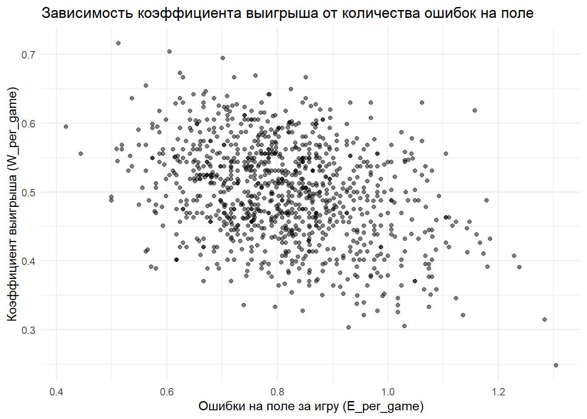
Question 8
Используйте данные о отфильтрованных командах из вопроса 6. Составьте таблицу распределения троек (X3b) в каждой игре и пар (X2B) в каждой игре.
Что из приведенного ниже верно?
Нет четкой взаимосвязи между дублями за игру и тройками за игру.
С увеличением количества дублей за игру количество троек за игру имеет тенденцию к увеличению.
С увеличением количества дублей за игру количество троек за игру имеет тенденцию к уменьшению.
Гальтон попытался предсказать рост сыновей, основываясь на росте отцов.
Средние значения и стандартные ошибки недостаточны для описания важной характеристики данных: тенденции, согласно которой чем выше отец, тем выше сын.
Коэффициент корреляции - это информативная сводка о том, как две переменные взаимодействуют друг с другом, которая может быть использована для прогнозирования одной переменной с использованием другой.
# create the datasetlibrary(tidyverse)library(HistData)data("GaltonFamilies")set.seed(1983)galton_heights <- GaltonFamilies %>%filter(gender =="male") %>%group_by(family) %>%sample_n(1) %>%ungroup() %>%select(father, childHeight) %>%rename(son = childHeight)# means and standard deviationsgalton_heights %>%summarize(mean(father), sd(father), mean(son), sd(son))
# scatterplot of father and son heightsgalton_heights %>%ggplot(aes(father, son)) +geom_point(alpha =0.5)
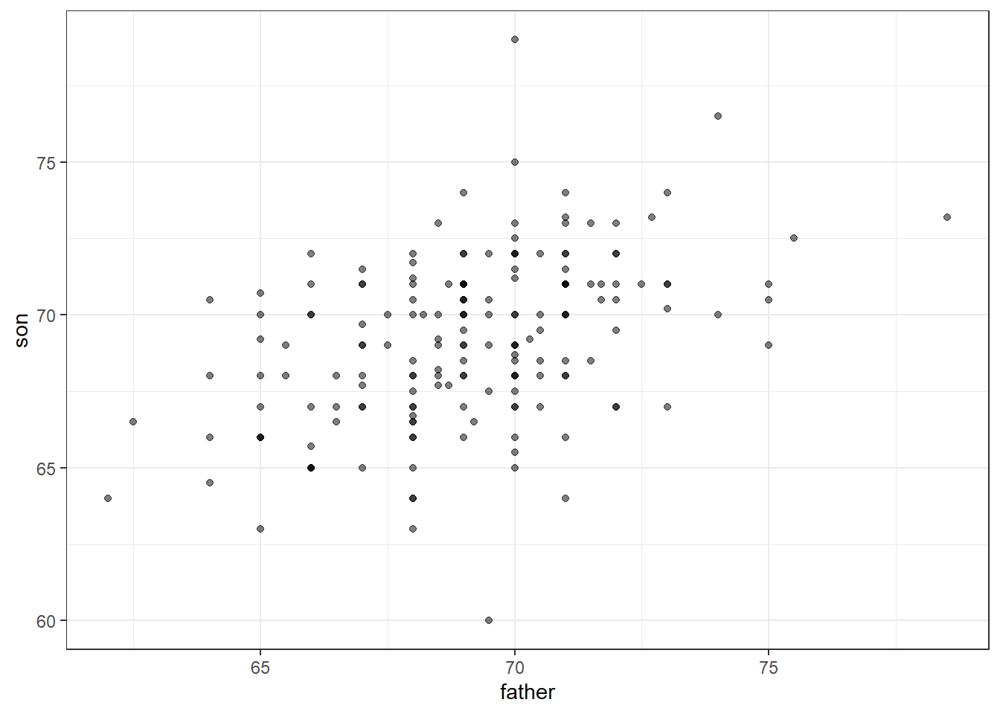
7.1.5 Correlation Coefficient
video_7.1.5
Коэффициент корреляции определяется для списка пар \((x_1, y_1), ..., (x_n, y_n)\) как сумма произведений стандартизированных значений: \((\frac{x_i - \mu_x}{\sigma_x})(\frac{y_i -\mu_y}{\sigma_y})\) для каждого наблюдения i. Термин продукта является положительным, когда оба стандартизированных x и y являются положительными или когда они оба являются отрицательными, и термин продукта является отрицательным, когда стандартизированные x и y имеют разные знаки (один положительный, а другой отрицательный).
Греческая буква \(p\) обычно используется для обозначения корреляции.
Коэффициент корреляции, по сути, отражает то, как две переменные взаимодействуют друг с другом.
Коэффициент корреляции всегда находится в диапазоне от -1 до 1.
Корреляция, которую мы вычисляем и используем в качестве обобщения, является случайной величиной.
При интерпретации корреляций важно помнить, что корреляции, полученные из выборок, являются оценками, содержащими неопределенность.
Поскольку выборочная корреляция представляет собой среднее значение независимых значений, применяется центральная предельная теорема.
# compute sample correlationmy_sample <-slice_sample(galton_heights, n =25, replace =TRUE)R <- my_sample %>%summarize(cor(father, son))# Monte Carlo simulation to show distribution of sample correlationB <-1000N <-25R <-replicate(B, {slice_sample(galton_heights, n = N, replace =TRUE) %>%summarize(r=cor(father, son)) %>% .$r})data.frame(R) %>%ggplot(aes(R)) +geom_histogram(binwidth =0.05, color ="black")
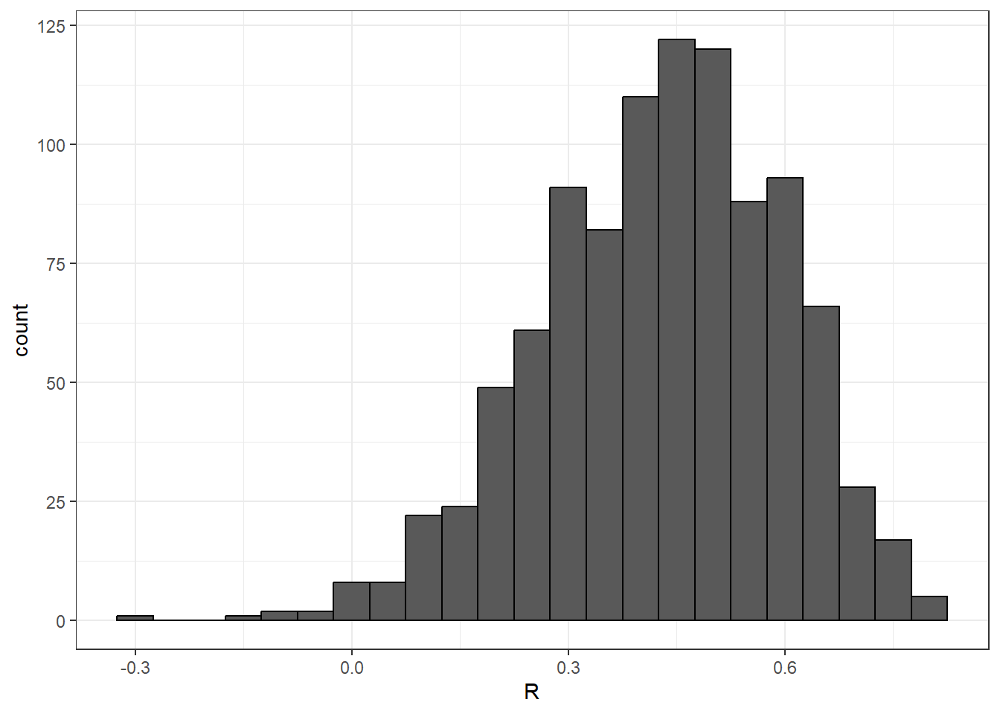
# expected value is the population correlationmean(R)
[1] 0.4291816
# standard error is high relative to its sizesd(R)
[1] 0.1663783
# QQ-plot to evaluate whether N is large enoughdata.frame(R) %>%ggplot(aes(sample = R)) +stat_qq() +geom_abline(intercept =mean(R), slope =sqrt((1-mean(R)^2)/(N-2)))
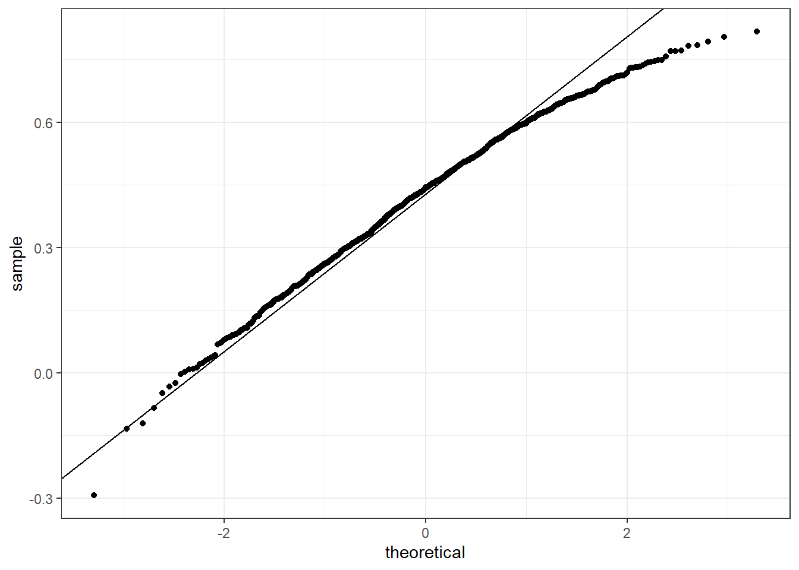
Assessment: Correlation
Question 1
Изучая наследственность, Фрэнсис Гальтон разработал какую важную статистическую концепцию?
Correlation
Question 2
Коэффициент корреляции - это краткое выражение чего?
Тенденция между двумя переменными
Дисперсия переменной
Центральная тенденция переменной
Распределение переменной
Question 3
Ниже приведен точечный график, показывающий взаимосвязь между двумя переменными, x и y.
Судя по этому рисунку, корреляция между x и y составляет около: -0.9
Question 4
Вместо того, чтобы запускать моделирование методом Монте-Карло с размером выборки 25 из 179 пар отец-сын, описанных в видеороликах, представьте, что теперь мы запускаем моделирование с размером выборки 50. Примечание: Вам не нужно запускать какой-либо код, чтобы определить ответ на это упражнение.
Ожидаете ли вы, что среднее значение выборочной корреляции увеличится, уменьшится или останется примерно таким же? Останется таким же
Question 5
Вместо того, чтобы запускать моделирование методом Монте-Карло с размером выборки 25 из 179 пар отец-сын, описанных в видеороликах, представьте, что теперь мы запускаем моделирование с размером выборки 50. Примечание: Вам не нужно запускать какой-либо код, чтобы определить ответ на это упражнение.
Ожидаете ли вы, что стандартное отклонение выборочной корреляции увеличится, уменьшится или останется примерно на том же уровне? уменьшится
Question 6
Если X и Y полностью независимы, то каким, по-вашему, должно быть значение коэффициента корреляции? 0
Question 7
Загрузите библиотеку Lehman. Отфильтруйте данные о командах, чтобы включить в них годы с 1961 по 2001.
Каков коэффициент корреляции между количеством забегов за игру и количеством отбитых мячей за игру?
library(Lahman)Teams_small <- Teams %>%filter(yearID %in%1961:2001)cor(Teams_small$R/Teams_small$G, Teams_small$AB/Teams_small$G)
[1] 0.6580976
Question 8
Используйте отфильтрованную таблицу команд из вопроса 7.
Каков коэффициент корреляции между коэффициентом выигрыша (количеством побед в игре) и количеством ошибок в игре?
Чтобы рассчитать коэффициент корреляции между коэффициентом выигрыша (количество побед за игру) и количеством ошибок на поле за игру, можно использовать аналогичный подход, как и раньше.
Шаги:
Вычислить коэффициент выигрыша (W_per_game).
Рассчитать количество ошибок на поле за игру (E_per_game).
Вычислить коэффициент корреляции между этими двумя переменными.
Вот код для выполнения этих шагов в R:
# Загрузка необходимых библиотекlibrary(Lahman)library(dplyr)# Фильтрация данных по годам с 1961 по 2001filtered_teams <- Teams %>%filter(yearID %in%1961:2001) %>%mutate(W_per_game = W / G, # Коэффициент выигрышаE_per_game = E / G) # Ошибки на поле за игру# Вычисление коэффициента корреляции между коэффициентом выигрыша и ошибками за игруcorrelation <-cor(filtered_teams$W_per_game, filtered_teams$E_per_game)# Вывод результатаcorrelation
[1] -0.3396947
Пояснение к коду:
W_per_game = W / G — это коэффициент выигрыша, который показывает, сколько побед команда имеет в среднем за игру.
E_per_game = E / G — это среднее количество ошибок за игру.
Функция cor() вычисляет коэффициент корреляции между коэффициентом выигрыша и ошибками на поле.
Ожидаемый результат:
Запустив этот код, ты получишь значение коэффициента корреляции, которое укажет, насколько сильно коэффициент выигрыша связан с количеством ошибок на поле. Значение может варьироваться от -1 до 1, где:
1 — сильная положительная корреляция,
-1 — сильная отрицательная корреляция,
0 — отсутствие корреляции.
Question 9
Используйте данные о отфильтрованных командах из вопроса 7.
Каков коэффициент корреляции между дублями (X2B) за игру и тройками (X3B) за игру?
# Фильтрация данных по годам с 1961 по 2001filtered_teams <- Teams %>%filter(yearID %in%1961:2001) %>%mutate(X2B_per_game = X2B / G, # Дубли за игруX3B_per_game = X3B / G) # Тройки за игру# Вычисление коэффициента корреляции между дублями и тройками за игруcorrelation <-cor(filtered_teams$X2B_per_game, filtered_teams$X3B_per_game)# Вывод результатаcorrelation
[1] -0.01157404
7.1.3: Stratification and Variance Explained
7.1.3.1 Anscombe’s Quartet
video_7.1.3.1
Ключевые моменты
Корреляция не всегда хорошо отражает взаимосвязь между двумя переменными.
Квартет Энскомба - это 4 искусственных набора данных с одинаковой корреляцией, которые на графике выглядят совершенно по-разному.
7.1.3.2 Stratification
video_7.1.3.2
Ключевые моменты
Общая идея условного математического ожидания заключается в том, что мы разбиваем совокупность на группы и вычисляем сводные данные по каждой группе.
Практический способ улучшить оценки условных математических ожиданий - определить страты с одинаковыми значениями x.
При наличии идеальной корреляции линия регрессии предсказывает увеличение, равное одинаковому числу SDS для обеих переменных. Если корреляция равна 0, то мы вообще не используем x для прогнозирования и просто рассчитываем среднее значение . При значениях от 0 до 1 прогноз находится где-то посередине. Если корреляция отрицательная, мы прогнозируем снижение, а не увеличение.
Intersept Перехват равен нулю, а наклон равен p, когда переменные стандартизированы
Напомним, что после стандартизации данной переменной среднее значение переменной будет равно 0, а стандартное отклонение - 1. То есть после стандартизации мы имеем \[\mu_x = 0\]
\[\mu_y = 0\]
\[\sigma_x = 1\]
\[\sigma_y = 1\] Теперь обратите внимание, что формула для наклона (SLOPE) задается по формуле: \[m = {\rho}\frac{\sigma_y}{\sigma_x}\] и перехват (INTERSEPT) задается с помощью:
\[b = {\mu_y} - m{\mu_x}\] Теперь, если мы подставим среднее значение и стандартное отклонение стандартизированных переменных x и y, мы получим значение наклона (SLOPE):
\[m = {\rho}\times\frac{1}{1}\] что упрощает до: \[m = {\rho}\]
Теперь, если мы подставим этот наклон в формулу для пересечения, мы получим:
\[b = 0 - {\rho}\times 0\]
что упрощает до:
\[b = 0 - 0\]
или \(b = 0\). Таким образом, мы показали, что точка пересечения равна нулю, а наклон - когда переменные стандартизированы.
CODE
# number of fathers with height 72 or 72.5 inchessum(galton_heights$father ==72)
[1] 8
sum(galton_heights$father ==72.5)
[1] 1
# predicted height of a son with a 72 inch tall fatherconditional_avg <- galton_heights %>%filter(round(father) ==72) %>%summarize(avg =mean(son)) %>%pull(avg)conditional_avg
[1] 70.5
# stratify fathers' heights to make a boxplot of son heightsgalton_heights %>%mutate(father_strata =factor(round(father))) %>%ggplot(aes(father_strata, son)) +geom_boxplot() +geom_point()
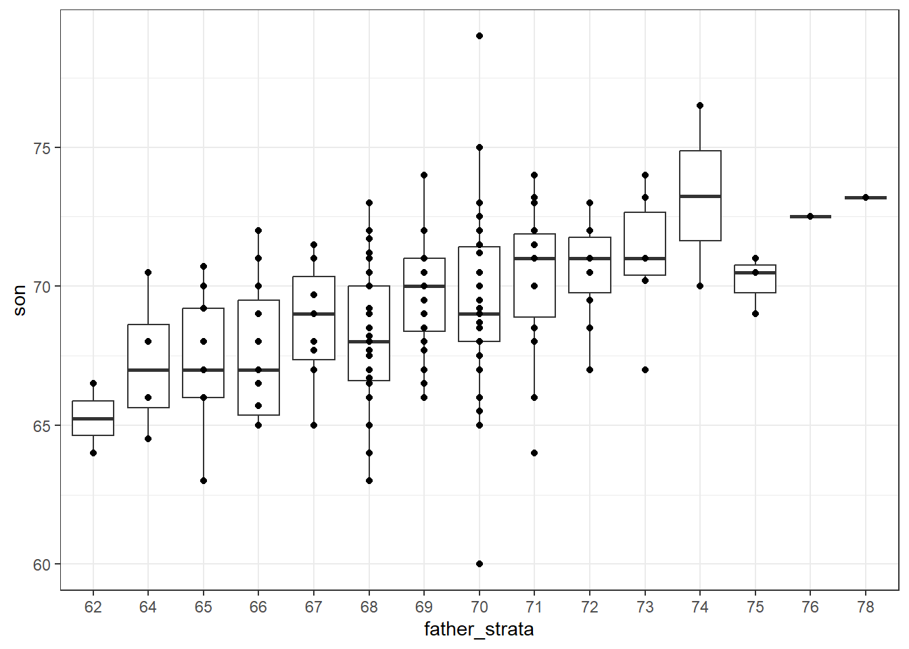
# center of each boxplotgalton_heights %>%mutate(father =round(father)) %>%group_by(father) %>%summarize(son_conditional_avg =mean(son)) %>%ggplot(aes(father, son_conditional_avg)) +geom_point()
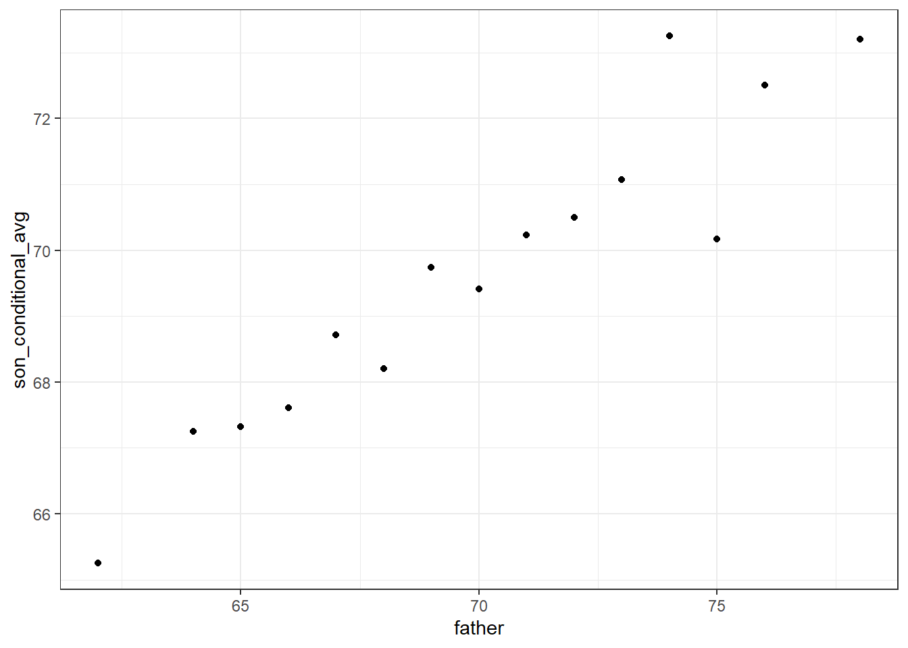
# add regression line to standardized datar <- galton_heights %>%summarize(r =cor(father, son)) %>%pull(r)galton_heights %>%mutate(father =scale(father), son =scale(son)) %>%mutate(father =round(father)) %>%group_by(father) %>%summarize(son =mean(son)) %>%ggplot(aes(father, son)) +geom_point() +geom_abline(intercept =0, slope = r)
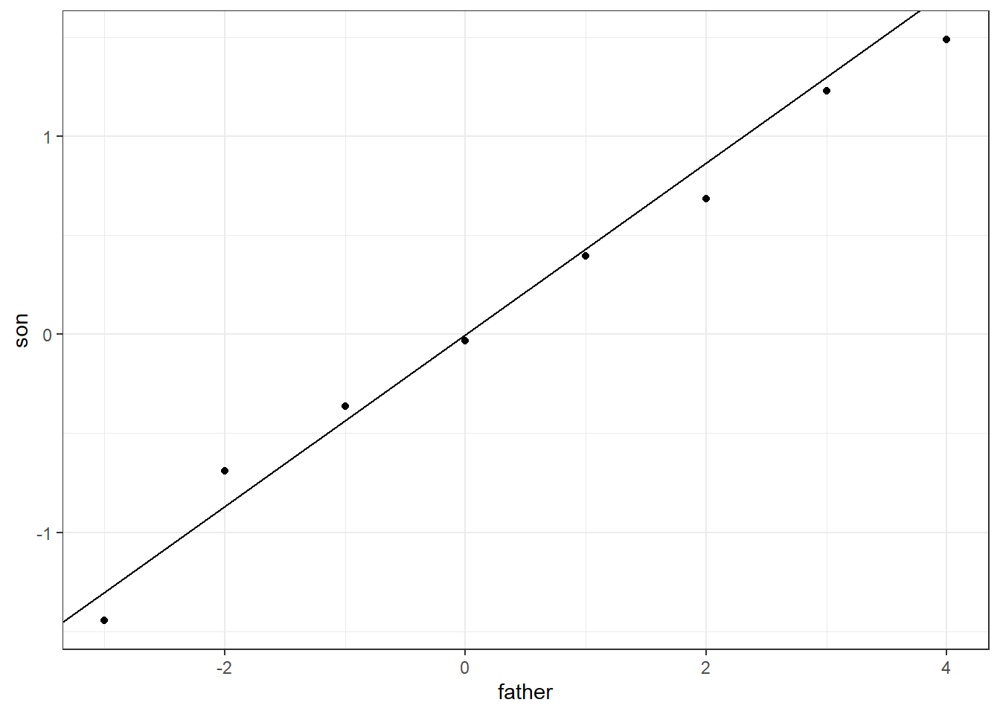
# add regression line to original datamu_x <-mean(galton_heights$father)mu_y <-mean(galton_heights$son)s_x <-sd(galton_heights$father)s_y <-sd(galton_heights$son)r <-cor(galton_heights$father, galton_heights$son)m <- r * s_y / s_xb <- mu_y - m*mu_xgalton_heights %>%ggplot(aes(father, son)) +geom_point(alpha =0.5) +geom_abline(intercept = b, slope = m )
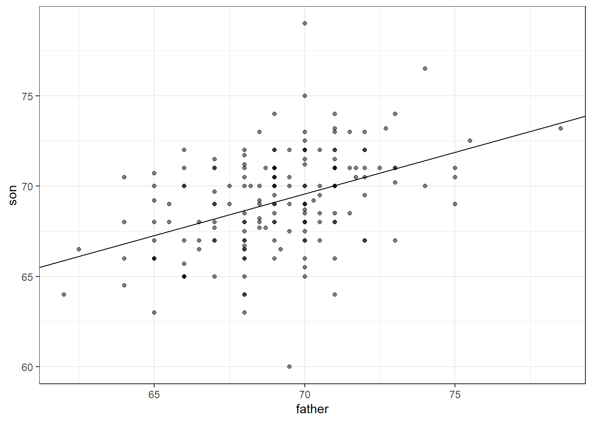
# plot in standard units and see that intercept is 0 and slope is rhogalton_heights %>%ggplot(aes(scale(father), scale(son))) +geom_point(alpha =0.5) +geom_abline(intercept =0, slope = r)
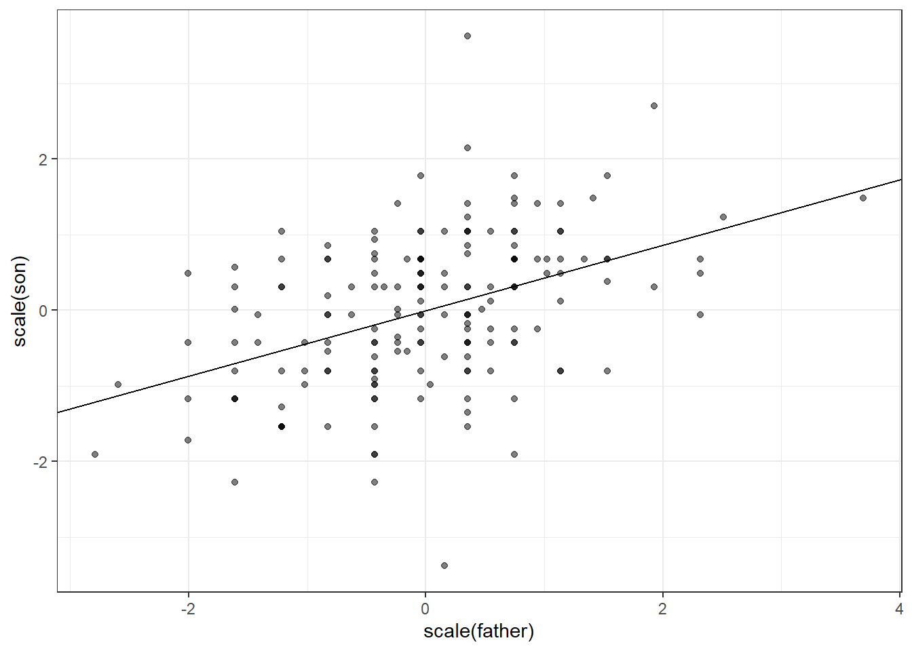
7.1.3.3 Bivariate Normal Distribution
video_7.1.3.3
Ключевые моменты
Когда пара случайных величин аппроксимируется двумерным нормальным распределением, диаграммы рассеяния выглядят как овалы. Они могут быть тонкими (с высокой корреляцией) или круглыми (без корреляции).
Когда две переменные имеют двумерное нормальное распределение, вычисление линии регрессии эквивалентно вычислению условных ожиданий.
Мы можем получить гораздо более стабильную оценку условного ожидания, найдя линию регрессии и используя ее для составления прогнозов.
Обратите внимание, что в видео в 1:33, при обсуждении условного распределения, X - это случайная величина, а x - фиксированное значение, которое мы выбираем.
Ключевые уравнения
Условное распределение
\(f_{Y \mid X=x} \mbox{ is the conditional distribution and } \mbox{E}(Y \mid X=x) \mbox{ is the conditional expected value}\) Ожидаемое значение (помните, что X - это случайная величина, а x - фиксированное значение, которое мы выбираем)
\[\mbox{E}(Y | X=x) = \mu_Y + \rho \frac{X-\mu_X}{\sigma_X}\sigma_Y\] То же, что и линия регрессии
Ключевые моменты - Использование случайной величины X может помочь уменьшить дисперсию переменной Y.
Стандартное отклонение условного распределения равно \(\mbox{SD}(Y \mid X=x) = \sigma_y\sqrt{1-\rho^2}\)
Поскольку дисперсия - это квадрат стандартного отклонения, дисперсия условного распределения равна \(\sigma_y^2(1-\rho^2)\)
В утверждении “X объясняет такой-то процент вариабельности” процентное значение относится к дисперсии. Дисперсия уменьшается \(\rho^2\) на процент.
Утверждение “объясненная дисперсия” имеет смысл только в том случае, если данные аппроксимированы двумерным нормальным распределением.
7.1.3.5 There are Two Regression Lines
video_7.1.3.5
Ключевой момент
Существуют две разные линии регрессии в зависимости от того, берем ли мы математическое ожидание Y при заданном X или математическое ожидание X при заданном Y.
CODE
# compute a regression line to predict the son's height from the father's heightmu_x <-mean(galton_heights$father)mu_y <-mean(galton_heights$son)s_x <-sd(galton_heights$father)s_y <-sd(galton_heights$son)r <-cor(galton_heights$father, galton_heights$son)m <- r * s_y / s_xb <- mu_y - m*mu_x# compute a regression line to predict the father's height from the son's heightm <- r * s_x / s_yb <- mu_x - m*mu_y
Assessment: Stratification and Variance Explained, Part 1
Question 1
Чему равен наклон линии регрессии на этом рисунке?
Slope = (correlation coefficient of son and father heights) * (standard deviation of sons’ heights / standard deviation of fathers’ heights)
Slope = (correlation coefficient of son and father heights) * (standard deviation of fathers’ heights / standard deviation of sons’ heights)
Slope = (correlation coefficient of son and father heights) / (standard deviation of sons’ heights * standard deviation of fathers’ heights)
Slope = (mean height of fathers) - (correlation coefficient of son and father heights * mean height of sons).
Question 2
Почему линия регрессии упрощается до линии с нулевым пересечением и наклоном, когда мы стандартизируем наши переменные x и y? Сначала попробуйте это упрощение на себе!
Когда мы стандартизируем переменные, x и y будут иметь среднее значение, равное единице, и стандартное отклонение, равное нулю. Когда вы подставляете это значение в формулу для линии регрессии, члены уравниваются, пока мы не получим следующее уравнение: \(y_i = \rho x_i\)
Когда мы стандартизируем переменные x и y будут иметь среднее значение, равное нулю, и стандартное отклонение, равное единице. Когда вы подставляете это значение в формулу для линии регрессии, члены уравниваются, пока мы не получим следующее уравнение:\(y_i = \rho x_i\)
Когда мы стандартизируем переменные, и x, и y будут иметь среднее значение, равное нулю, и стандартное отклонение, равное единице. Когда вы подставляете это значение в формулу для линии регрессии, члены уравниваются, пока мы не получим следующее уравнение:\(y_i = \rho + x_i\)
Когда мы стандартизируем переменные x и y, они получают среднее значение, равное нулю, и стандартное отклонение, равное единице. Давайте шаг за шагом разберём, как это влияет на уравнение регрессии.
1. Общая формула линейной регрессии:
Обычно линия регрессии записывается как:
\[y_i = \beta_0 + \beta_1 x_i\]
где \(\beta_0\)— это пересечение, а \(\beta_1\) — это наклон.
2. Стандартизация переменных:
Стандартизация переменных \(x\) и \(y\) означает, что:
Для переменной \(x\):
\[
x\_{\text{std}} = \frac{x - \mu_x}{\sigma_x}\]
Для переменной \(y\):
\[
y\_{\text{std}} = \frac{y - \mu_y}{\sigma_y}\]
где:
\(\mu_x\) и \(\mu_y\) - это средние значения \(\sigma_x\) и \(\sigma_y\) - это стандартные отклонения.
В результате стандартизации новые переменные \(x_\text{std}\) и \(y_\text{std}\) будут иметь следующие свойства:
Среднее значение равно нулю. Стандартное отклонение равно единице.
3. Влияние на уравнение регрессии:
После стандартизации переменных средние значения \(x\) и \(y\) становятся нулевыми. Таким образом, пересечение линии регрессии \(\beta_0\) должно быть равно нулю, потому что стандартизированная переменная \(y\) равна нулю, когда \(x\) тоже равно нулю.
Таким образом, уравнение регрессии упрощается до:
\[y_{\text{std}} = \beta_1 x_{\text{std}}\]
4.Наклон регрессии между стандартизированными переменными:
\[\beta_1 = \rho\] где \(\rho\) - корреляция между \(x\) и \(y\).
5. Итоговое уравнение регрессии после стандартизации:
\[y_{\text{std}} = \rho x_{\text{std}}\]
Question 3
Каковы ограничения при расчете средних значений?
Для каждого слоя, для которого мы задаем условия (например, рост конкретного отца), может быть не так много точек данных.
Поскольку количество точек данных для каждого слоя ограничено, наши средние значения имеют большие стандартные ошибки.
Условные средние значения менее стабильны, чем линия регрессии.
Условные средние значения являются полезным теоретическим инструментом, но их невозможно рассчитать.
Question 4
Линия регрессии является наилучшим предсказанием Y, если мы знаем значение X, когда:
X и Y соответствуют двумерному нормальному распределению.
И X, и Y распределены нормально.
И X, и Y были стандартизированы.
Существует не менее 25 пар X-Y.
Уведомление
GPT
Линия регрессии является наилучшим предсказанием Y, если мы знаем значение X, при условии, что:
X и Y соответствуют двумерному нормальному распределению.
Это объясняется тем, что для двух переменных, которые следуют совместному нормальному распределению, условное среднее значение Y, данное X, будет линейной функцией X. То есть линия регрессии представляет собой наилучшую линейную аппроксимацию взаимосвязи между X и Y в случае совместного нормального распределения.
Обоснование:
Двумерное нормальное распределение: Если X и Y имеют совместное двумерное нормальное распределение, то их условное распределение также будет нормальным, и линейная регрессия будет наилучшей аппроксимацией этой зависимости.
Нормальные распределения для X и Y по отдельности: Нормальное распределение для каждой переменной по отдельности не гарантирует линейной связи между ними. Важно, чтобы была совместная нормальность (двумерное распределение).
Стандартизация переменных: Стандартизация переменных X и Y не изменяет природу взаимосвязи между ними, а лишь преобразует шкалу измерений. Это не влияет на то, является ли линия регрессии наилучшим предсказанием.
Минимальное количество пар X-Y Наличие 25 пар данных помогает улучшить статистическую значимость, но не гарантирует, что линия регрессии будет наилучшим предсказанием.
Question 5
Какая из следующих диаграмм рассеяния изображает распределение x и y, которое плохо аппроксимируется двумерным нормальным распределением?
Уведомление
GPT
Диаграмма рассеяния с V-образным распределением точек, центрированным на нуле, изображает распределение x и y, которое не может быть хорошо аппроксимировано двумерным нормальным распределением.
Обоснование:
Двумерное нормальное распределение обычно характеризуется эллипсоидной или овальной формой распределения точек, где точки симметрично расположены вокруг центральной тенденции (среднего значения).
В отличие от этого, V-образное распределение указывает на нелинейную зависимость между x и y, которая плохо описывается линейной моделью или нормальным распределением. Это может свидетельствовать о наличии гетероскедастичности (различие в разбросе данных) или о разных режимах в данных, что нарушает предположения двумерного нормального распределения.
Question 6
Ранее мы подсчитали, что коэффициент корреляции между ростом отцов и сыновей равен 0,5.
Учитывая это, какой процент различий в росте сыновей объясняется ростом отцов?
0%
25%
50%
75%
Уведомление
GPT
Если коэффициент корреляции между ростом отцов и сыновей равен r = 0.5, то процент различий в росте сыновей, который объясняется ростом отцов, можно найти, возведя коэффициент корреляции в квадрат.
r^2 = 0.5^2 = 0.25
Это означает, что 25% различий в росте сыновей объясняется ростом отцов.
Ответ: 25%.
Question 7
Предположим, что корреляция между ростом отца и сына равна 0,5, стандартное отклонение роста отцов составляет 2 дюйма, а стандартное отклонение роста сыновей - 3 дюйма.
Учитывая увеличение роста отца на один дюйм, каково прогнозируемое изменение роста сына?
0.333
0.5
0.667
0.75
1
1.5
Уведомление
GPT
Для расчета прогнозируемого изменения роста сына при увеличении роста отца на один дюйм можно использовать формулу для коэффициента наклона регрессионной линии:
\[b_1 = r \cdot \frac{\sigma_y}{\sigma_x}\] где: \(r = 0.5\) — коэффициент корреляции между ростом отцов и сыновей, \(\sigma_y = 3\) дюйма — стандартное отклонение роста сыновей, \(sigma_x = 2\) дюйма — стандартное отклонение роста отцов.
Подставим значения:
\[b_1 = 0.5 \cdot \frac{3}{2} = 0.5 \cdot 1.5 = 0.75\] Это означает, что при увеличении роста отца на 1 дюйм прогнозируемое изменение роста сына составляет 0.75 дюйма.
Assessment: Stratification and Variance Explained, Part 2
Во второй части этой оценки вы проанализируете набор значений роста матери и дочери, также из семейства GaltonFamilies. Определите female_heights, набор значений роста матери и дочери, выбранных из семейства GaltonFamilies, следующим образом:
library(tidyverse)set.seed(1989) #if you are using R 3.5 or earlierset.seed(1989, sample.kind="Rounding") #if you are using R 3.6 or later
Warning in set.seed(1989, sample.kind = "Rounding"): non-uniform 'Rounding'
sampler used
Обратите внимание, что если вы используете R 3.6 или более позднюю версию с командой sample.kind = “Округление”, вы получите следующее предупреждающее сообщение: “Предупреждение: в set.seed(1989, sample.kind =”Округление”): используется выборка с неравномерным округлением”. Это не значит, что вы сделали что-то не так! Это ожидаемое сообщение и не означает, что был использован неверный код.
Question 8
Рассчитайте среднее значение и стандартное отклонение роста матерей, среднее значение и стандартное отклонение роста дочерей и коэффициент корреляции между ростом матери и дочери.
Рассчитайте наклон и пересечение линии регрессии, предсказывающей рост дочерей, с учетом роста матерей. Учитывая увеличение роста матери на 1 дюйм, на сколько дюймов должен измениться рост дочери?
Наклон линии регрессии, предсказывающей рост дочерей, зависит от роста матерей
Пересечение линии регрессии, предсказывающей рост дочерей с ростом матерей
Изменение роста дочери в дюймах при увеличении роста матери на 1 дюйм
Уведомление
GPT
Для расчета наклона и пересечения линии регрессии, предсказывающей рост дочерей в зависимости от роста матерей, используем следующую формулу:
Формула для наклона\(b_1\):
\[b_1 = r \cdot \frac{\sigma_{\text{daughters}}}{\sigma_{\text{mothers}}}\]\(r\) — коэффициент корреляции между ростом матерей и дочерей,
\(\sigma_{\text{daughters}}\) — стандартное отклонение роста дочерей,
\(\sigma_{\text{mothers}}\)— стандартное отклонение роста матерей.
\(\mu_{\text{daughters}}\) — средний рост дочерей, \(\mu_{\text{mothers}}\) — средний рост матерей.
Изменение роста дочери: Изменение роста дочери на каждый дюйм увеличения роста матери равно коэффициенту наклона \(b_1\).
# Define the values from the user's datamean_mother =64.125sd_mother =2.289292mean_daughter =64.28011sd_daughter =2.39416correlation =0.3245199# Calculate the slope (b1)b1 = correlation * (sd_daughter / sd_mother)# Calculate the intercept (b0)b0 = mean_daughter - b1 * mean_mother# Display the resultsb1
[1] 0.3393855
b0
[1] 42.51701
На основе предоставленных данных:
Наклон линии регрессии \(b_1\), предсказывающей рост дочерей по росту матерей, составляет приблизительно 0.34. Пересечение линии регрессии \(b_0\) составляет приблизительно 42.52. Это означает, что при увеличении роста матери на 1 дюйм прогнозируемое изменение роста дочери составляет около 0.34 дюйма.
Question 10
Какой процент вариабельности в росте дочерей объясняется ростом матери?
Чтобы рассчитать процент вариабельности в росте дочерей, который объясняется ростом матери, нужно возвести коэффициент корреляции \(r\) в квадрат. Это называется коэффициентом детерминации \(R^2\), который показывает, какая часть вариабельности зависимой переменной (роста дочерей) объясняется независимой переменной (ростом матерей).
Рассчитанный процент вариабельности составляет 10.53%. Это означает, что около 10.53% изменений в росте дочерей объясняются ростом матерей, на основе коэффициента корреляции \(r = 0.3245199\).
Question 11
Рост матери составляет 60 дюймов.
Используя формулу регрессии, каково условное ожидаемое значение роста ее дочери с учетом роста матери?
В разделе “Линейные модели” вы узнаете, как выполнять линейную регрессию.
После завершения этого раздела вы сможете:
Использовать многомерную регрессию для учета факторов, вызывающих помехи.
Напишите линейные модели для описания взаимосвязи между двумя или более переменными.
Рассчитайте оценки методом наименьших квадратов для регрессионной модели, используя функцию lm.
Разберитесь в различиях между tibbles и фреймами данных.
Используйте функции tidy(), glance() и augment() из пакета broom.
Примените линейную регрессию к моделям ошибок измерений.
Этот раздел состоит из четырех частей: Введение в линейные модели, оценки методом наименьших квадратов, Тибблс и брум, регрессия и бейсбол. В конце каждой части приведены тесты на понимание, а также оценка по линейным моделям в конце всего раздела только для проверенных учащихся.
2.1. Введение в линейные модели
2.1.1 Confounding: Are BBs More Predictive? Вызывает недоумение: Являются ли BBs более прогностичными?
video 2.1.1
Ключевые моменты
Ассоциация - это не причинно-следственная связь! Хотя может показаться, что причиной является BB, на самом деле именно HR является причиной большинства таких случаев. Мы говорим, что BB путают с HR. Регрессия может помочь нам объяснить причину путаницы.
# find regression line for predicting runs from BBs (not shown in video)library(tidyverse)library(Lahman)get_slope <-function(x, y) cor(x, y) *sd(y) /sd(x)bb_slope <- Teams %>%filter(yearID %in%1961:2001 ) %>%mutate(BB_per_game = BB/G, R_per_game = R/G) %>%summarize(slope =get_slope(BB_per_game, R_per_game))bb_slope
slope
1 0.7353288
# compute regression line for predicting runs from singles (not shown in video)singles_slope <- Teams %>%filter(yearID %in%1961:2001 ) %>%mutate(Singles_per_game = (H-HR-X2B-X3B)/G, R_per_game = R/G) %>%summarize(slope =get_slope(Singles_per_game, R_per_game))singles_slope
Первый подход к устранению путаницы заключается в том, чтобы зафиксировать количество часов на определенном уровне, а затем изучить взаимосвязь между BB и пробегами.
Наклоны BB после стратификации по HR уменьшаются, но они не равны 0, что указывает на то, что BB полезны для создания прогонов, просто не так сильно, как считалось ранее.
# stratify HR per game to nearest 10, filter out strata with few pointsdat <- Teams %>%filter(yearID %in%1961:2001) %>%mutate(HR_strata =round(HR/G, 1), BB_per_game = BB / G,R_per_game = R / G) %>%filter(HR_strata >=0.4& HR_strata <=1.2)# scatterplot for each HR stratumdat %>%ggplot(aes(BB_per_game, R_per_game)) +geom_point(alpha =0.5) +geom_smooth(method ="lm") +facet_wrap( ~ HR_strata)
`geom_smooth()` using formula = 'y ~ x'
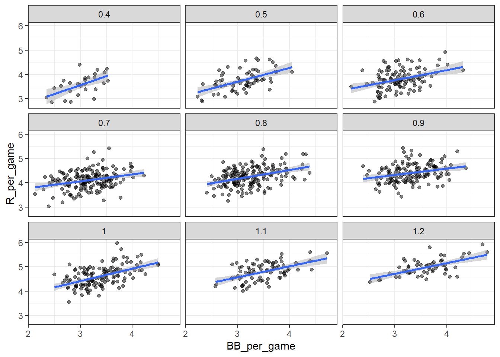
# calculate slope of regression line after stratifying by HRdat %>%group_by(HR_strata) %>%summarize(slope =cor(BB_per_game, R_per_game)*sd(R_per_game)/sd(BB_per_game))
# stratify by BBdat <- Teams %>%filter(yearID %in%1961:2001) %>%mutate(BB_strata =round(BB/G, 1), HR_per_game = HR / G,R_per_game = R / G) %>%filter(BB_strata >=2.8& BB_strata <=3.9) # scatterplot for each BB stratumdat %>%ggplot(aes(HR_per_game, R_per_game)) +geom_point(alpha =0.5) +geom_smooth(method ="lm") +facet_wrap( ~ BB_strata)
`geom_smooth()` using formula = 'y ~ x'
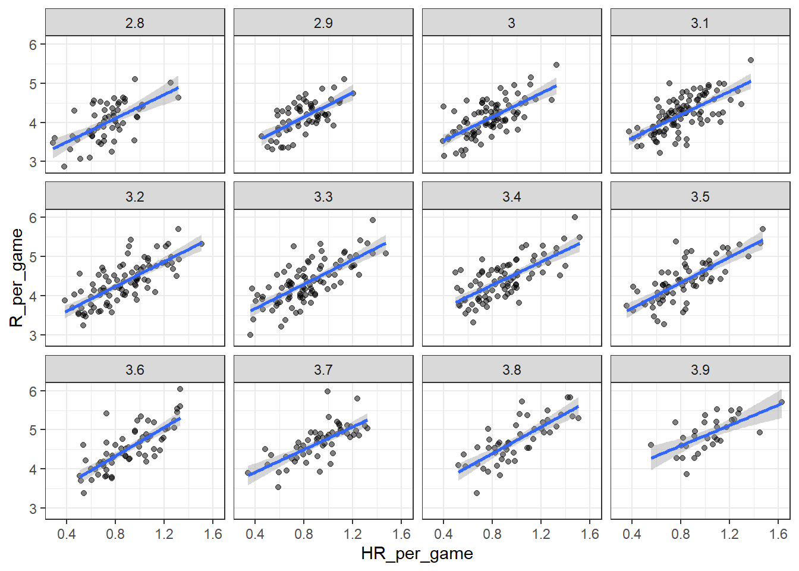
# slope of regression line after stratifying by BBdat %>%group_by(BB_strata) %>%summarize(slope =cor(HR_per_game, R_per_game)*sd(R_per_game)/sd(HR_per_game))
Термин “линейный” здесь относится не к линиям, а скорее к тому факту, что условное математическое ожидание представляет собой линейную комбинацию известных величин.
В модели Гальтона мы предполагаем, что \(Y\) (рост сына) - это линейная комбинация постоянной и \(X\) (рост отца) плюс случайный шум. Далее мы предполагаем, что \(\epsilon_i\) независимы друг от друга, имеют математическое ожидание 0 и стандартное отклонение \(\sigma\), которое не зависит от i.
Обратите внимание, что если мы далее предположим, что \(\epsilon\) нормально распределенное значение, то модель будет точно такой же, какую мы получили ранее, предполагая двумерные нормальные данные.
Мы можем вычесть среднее значение из \(X\), чтобы сделать \(\beta\) более понятным для интерпретации.
Assessment: Introduction to Linear Models
Question 1
Как описано в видеороликах, что произошло, когда мы распределили наши линии регрессии для забегов за игру по сравнению с базами на мячах по количеству хоум-ранов?
Количество забегов за игру в сравнении с базами на мячах в каждом слое было уменьшено, потому что мы устранили путаницу с хоум-ранами.
Количество забегов за игру в сравнении с базами на мячах в каждом слое было уменьшено, потому что было меньше точек данных.
Количество забегов за игру в сравнении с базами на мячах в каждом слое увеличилось после того, как мы устранили путаницу с хоум-ранами.
Количество забегов за игру в сравнении с базами на мячах в каждом слое осталось примерно таким же, как и в исходном слое.
Question 2
Мы запустили линейную модель зависимости роста сыновей от роста отцов, используя данные о росте Гальтона, и получили следующие результаты:
lm(son ~ father, data = galton_heights)
Call:
lm(formula = son ~ father, data = galton_heights)
Coefficients:
(Intercept) father
37.2876 0.4614
С каждым дюймом, на который мы увеличиваем рост сына, рост предполагаемого отца увеличивается на 0,5 дюйма.
С каждым дюймом, на который мы увеличиваем рост отца, рост предполагаемого сына увеличивается на 0,5 дюйма.
На каждый дюйм, на который мы увеличиваем рост отца, прогнозируемый рост сына увеличивается в 0,5 раза.
Этот коэффициент представляет собой наклон линии регрессии и показывает, насколько изменяется прогнозируемый рост сына при увеличении роста отца на один дюйм. В данном случае коэффициент равен 0,5, что означает, что рост сына увеличивается на 0,5 дюйма с каждым дюймом роста отца.
Question 3
Мы хотим, чтобы термин intercept для нашей модели был более понятным, поэтому мы используем ту же модель, что и раньше, но теперь мы вычитаем среднее значение роста отцов из роста каждого отдельного отца, чтобы создать новую переменную с нулевым центром.
Предположим, \(BB=x_1\) мы исправим. Тогда мы наблюдаем линейную зависимость между пробегами и частотой с перехватом:
\(\beta_0\)
\(\beta_0 + \beta_2*x_2\)
\(\beta_0 + \beta_1*x_1\) #correct
\(\beta_0 + \beta_2*x_1\)
Question 5
Какие из следующих допущений являются допущениями для ошибок \(\epsilon\) в модели линейной регрессии?
\(\epsilon_i\) независимы друг от друга
\(\epsilon_i\) имеют ожидаемое значение 0
Дисперсия \(\epsilon_i\) является постоянной
2.2 Least Squares Estimates (LSE) Оценки методом наименьших квадратов (LSE)
2.2.1 Least Squares Estimates (LSE)
video 2.2.1
Ключевые моменты
Для регрессии мы стремимся найти значения коэффициентов, которые минимизируют расстояние от подобранной модели до данных.
Остаточная сумма квадратов Residual sum of squares (RSS) измеряет расстояние между истинным значением и прогнозируемым значением, полученным с помощью линии регрессии. Значения, которые минимизируют RSS, называются оценками наименьших квадратов least squares estimates (LSE).
Мы можем использовать частные производные, чтобы получить значения для \(\beta_0\) и \(\beta_1\) в данных Гальтона.
ПРИМЕЧАНИЕ: В момент времени 0:57 в видео профессор использует термины \(\beta_1\) и \(\beta_2\) , но это должно быть \(\beta_0\) и \(\beta_1\)
# compute RSS for any pair of beta0 and beta1 in Galton's datalibrary(HistData)data("GaltonFamilies")set.seed(1983)galton_heights <- GaltonFamilies %>%filter(gender =="male") %>%group_by(family) %>%sample_n(1) %>%ungroup() %>%select(father, childHeight) %>%rename(son = childHeight)rss <-function(beta0, beta1){ resid <- galton_heights$son - (beta0+beta1*galton_heights$father)return(sum(resid^2))}# plot RSS as a function of beta1 when beta0=25beta1 =seq(0, 1, len=nrow(galton_heights))results <-data.frame(beta1 = beta1,rss =sapply(beta1, rss, beta0 =25))results %>%ggplot(aes(beta1, rss)) +geom_line() +geom_line(aes(beta1, rss))
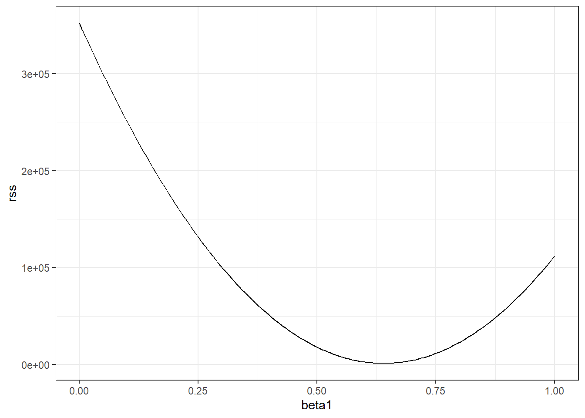
2.2.2 The lm Function
video 2.2.2
Ключевые моменты
При вызове функции lm() переменная, которую мы хотим предсказать, помещается слева от символа ~, а переменные, которые мы используем для прогнозирования, - справа от символа ~.
Перехват добавляется автоматически.
LSE - это случайные величины.
# fit regression line to predict son's height from father's heightfit <-lm(son ~ father, data = galton_heights)fit
Call:
lm(formula = son ~ father, data = galton_heights)
Coefficients:
(Intercept) father
38.7646 0.4411
# summary statisticssummary(fit)
Call:
lm(formula = son ~ father, data = galton_heights)
Residuals:
Min 1Q Median 3Q Max
-9.4228 -1.7022 0.0333 1.5670 9.3567
Coefficients:
Estimate Std. Error t value Pr(>|t|)
(Intercept) 38.76457 5.41093 7.164 2.03e-11 ***
father 0.44112 0.07825 5.637 6.72e-08 ***
---
Signif. codes: 0 '***' 0.001 '**' 0.01 '*' 0.05 '.' 0.1 ' ' 1
Residual standard error: 2.659 on 177 degrees of freedom
Multiple R-squared: 0.1522, Adjusted R-squared: 0.1474
F-statistic: 31.78 on 1 and 177 DF, p-value: 6.719e-08
2.2.3 LSE are Random Variables
video 2.2.3
Ключевые моменты
Поскольку они получены из выборок, LSE являются случайными величинами.
\(\beta_0\) и \(\beta_1\), по-видимому, они нормально распределены, поскольку здесь играет роль центральная предельная теорема.
t-статистика зависит от предположения, что она соответствует нормальному распределению.
# Monte Carlo simulationB <-1000N <-50lse <-replicate(B, {sample_n(galton_heights, N, replace =TRUE) %>%lm(son ~ father, data = .) %>% .$coef })lse <-data.frame(beta_0 = lse[1,], beta_1 = lse[2,]) # Plot the distribution of beta_0 and beta_1library(gridExtra)
Присоединяю пакет: 'gridExtra'
Следующий объект скрыт от 'package:dplyr':
combine
p1 <- lse %>%ggplot(aes(beta_0)) +geom_histogram(binwidth =5, color ="black") p2 <- lse %>%ggplot(aes(beta_1)) +geom_histogram(binwidth =0.1, color ="black") grid.arrange(p1, p2, ncol =2)
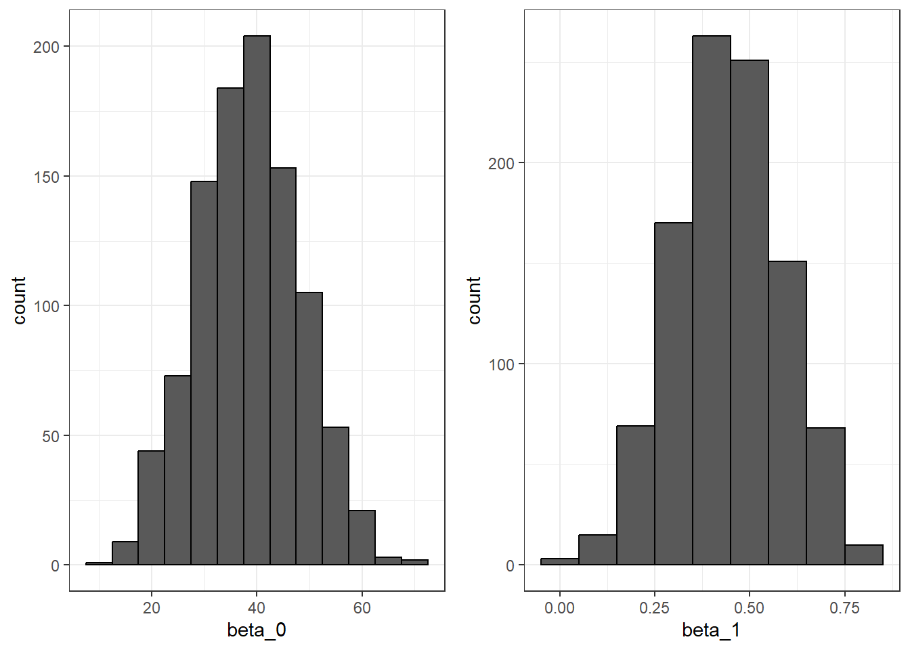
# summary statisticssample_n(galton_heights, N, replace =TRUE) %>%lm(son ~ father, data = .) %>% summary %>% .$coef
Estimate Std. Error t value Pr(>|t|)
(Intercept) 34.4729422 8.6021831 4.007464 0.0002129225
father 0.4990193 0.1240572 4.022493 0.0002030210
Advanced Note on LSE
Хотя интерпретация не является однозначной, также полезно знать, что LSE может быть сильно коррелирован, что можно увидеть, используя этот код:
lse %>%summarize(cor(beta_0, beta_1))
cor(beta_0, beta_1)
1 -0.9993386
Однако корреляция зависит от того, как определены или преобразованы предикторы.
Здесь мы стандартизируем рост отца, который меняется \(x_i\) to \(x_i - \bar{x}\)
B <-1000N <-50lse <-replicate(B, {sample_n(galton_heights, N, replace =TRUE) %>%mutate(father = father -mean(father)) %>%lm(son ~ father, data = .) %>% .$coef })
Понаблюдайте, что происходит с корреляцией в этом случае:
cor(lse[1,], lse[2,])
[1] 0.1100929
2.2.4 Predicted Variables are Random Variables
video 2.2.3
Ключевые моменты
Прогнозируемое значение часто обозначается как \(\hat{Y}\) , которое является случайной величиной. Математическая теория говорит нам, какова стандартная ошибка прогнозируемого значения.
Функция predict() в R может напрямую давать нам прогнозы.
в модели для сравнения роста сыновей и роста отцов, какова оценка по методу наименьших квадратов (LSE),\(\beta_1\) если мы предположим, что \(\hat{\beta_0}\) равна 36?
0.65
0.5
0.2
12
Question 3
Загрузите библиотеку Lehman и отфильтруйте фрейм данных Teams по 1961-2001 годам. Измените набор данных, чтобы создать переменные для баз на мячах за игру, пробежек за игру и хоум-ранов за игру, затем запустите линейную модель в R, предсказывающую количество пробежек за игру на основе как количества баз на мячах за игру, так и количества хоум-ранов за игру.
Каков коэффициент для баз по мячам за игру?
0.39
1.56
1.74
0.027
# Загрузка библиотекlibrary(Lahman)library(dplyr)# Фильтрация данных Teams по годам 1961-2001teams_filtered <- Teams %>%filter(yearID >=1961, yearID <=2001) %>%mutate(BB_per_game = BB / G, # Базы на мячах за игруR_per_game = R / G, # Пробежки за игруHR_per_game = HR / G # Хоум-раны за игру )# Линейная модель для предсказания пробежек за игру на основе баз на мячах и хоум-рановmodel <-lm(R_per_game ~ BB_per_game + HR_per_game, data = teams_filtered)# Просмотр коэффициентов моделиsummary(model)$coefficients
Мы проводим моделирование методом Монте-Карло, в ходе которого многократно берем выборки из N = 100 данных по высотам Гальтона и вычисляем коэффициенты наклона регрессии для каждой выборки:
B <-1000N <-100lse <-replicate(B, {sample_n(galton_heights, N, replace =TRUE) %>%lm(son ~ father, data = .) %>% .$coef })lse <-data.frame(beta_0 = lse[1,], beta_1 = lse[2,]) lse
Что говорит нам центральная предельная теорема о переменных beta_0 и beta_1?
Они примерно нормально распределены.
Ожидаемое значение каждого из них равно истинному значению $\beta_0$ и $\beta_1$ (при условии, что данные по Гальтон-Хайтс представляют собой полную совокупность).
Центральная предельная теорема в данной ситуации неприменима.
Это позволяет нам проверить гипотезу о том, что \(\beta_0 = 0\) и \(\beta_1 = 0\).
Question 5
Какой из приведенных ниже R-кодов правильно построит прогнозы и доверительные интервалы для нашей линейной модели роста сыновей?
Прогнозируйте рост матерей, используя модель из вопроса 7 и функцию predict().
Каков прогнозируемый рост первой матери в наборе данных?
# Создаем линейную модель зависимости роста матери от роста дочериmodel <-lm(mother ~ daughter, data = female_heights)# Прогнозируем рост первой матери в наборе данныхpredicted_mother_height <-predict(model, newdata =data.frame(daughter = female_heights$daughter[1]))# Вывод результатаpredicted_mother_height
1
65.6
Каков фактический рост первой матери в наборе данных?
female_heights$mother[1]
[1] 67
BB (Base on Balls), также известное как прогулка, — это термин в бейсболе, который обозначает ситуацию, когда бьющий получает право занять первую базу, не сделав удара, потому что питчер подал четыре мяча вне зоны удара (четыре болла)
Уведомление
В этих формулах описаны ключевые бейсбольные метрики, которые помогают понять вклад игрока в нападение. Давайте разберём каждую из них:
PA = AB + BB
PA (Plate Appearances) — это общее количество выходов на биту.
AB (At Bats) — это количество попыток бить мяч, за исключением прогулок (BB) и некоторых других ситуаций.
BB (Base on Balls) — это количество прогулок (когда игрок получает базу из-за четырёх подач вне зоны удара).
Формула означает, что общее количество выходов на биту (PA) состоит из попыток удара (AB) и прогулок (BB). Таким образом, PA — это сумма всех случаев, когда игрок стоял на базе, независимо от того, закончились ли они ударами, прогулками или другими действиями.
Singles = (H - X2B - X3B - HR) / PA
H (Hits) — общее количество удачных ударов (когда бьющий достигает базы).
X2B (Doubles) — количество двоек (удары, при которых бьющий достигает второй базы).
X3B (Triples) — количество троек (удары, при которых бьющий достигает третьей базы).
HR (Home Runs) — количество хоум-ранов (удары, при которых бьющий пробегает все базы).
Эта формула вычисляет количество одиночных игр (Singles), то есть случаев, когда бьющий достиг только первой базы. Одиночные игры вычисляются как разница между общим количеством ударов (H) и количеством двоек (X2B), троек (X3B) и хоум-ранов (HR), затем делится на количество выходов на биту (PA), чтобы получить долю одиночных игр на одно выступление на биту.
BB = BB / PA
BB (Base on Balls) — количество прогулок.
PA (Plate Appearances) — общее количество выходов на биту.
Эта формула вычисляет частоту прогулок (BB), то есть процент случаев, когда игрок получает прогулку из общего числа выходов на биту (PA). Она показывает, насколько часто игрок получает прогулку вместо удара или других действий на биту.
Итог:
PA — это общее количество выходов на биту (включая прогулки).
Singles — это доля одиночных игр на одно выступление на биту.
BB — это частота прогулок на одно выступление на биту.
Эти показатели помогают оценить общую результативность игрока в нападении, в том числе его способность добиваться прогулок и попаданий на базы через удары.
Мы показали, что BB и одиночные игры обладают схожей прогностической способностью при подсчете очков. Еще один способ сравнить полезность этих показателей в бейсболе - оценить, насколько они стабильны на протяжении многих лет. Поскольку нам приходится выбирать игроков на основе их предыдущих выступлений, мы предпочитаем более стабильные показатели. В этих упражнениях мы сравним стабильность одиночных игр и BBs.
Прежде чем мы начнем, мы хотим сгенерировать две таблицы: одну за 2002 год, а другую - за средние показатели за сезоны 1999-2001 годов. Мы хотим определить статистику выступлений по каждому номеру, сохранив только игроков, у которых более 100 появлений на поле. Вот как мы создаем таблицу 2002 года:
Теперь вычислите аналогичную таблицу, но с показателями, рассчитанными за 1999-2001 годы. Сохраните только ряды за 1999-2001 годы, в которых игроки сыграли 100 и более матчей, рассчитайте одиночную ставку каждого игрока и ставку BB за период (где каждая строка - это один период - игрок может играть несколько раз в течение сезона), затем рассчитайте среднюю одиночную ставку (mean_singles) и среднюю ставку BB (mean_bb). на каждого игрока в течение трехлетнего периода.
У скольких игроков средняя ставка в одиночных матчах превышала 0,2 за выход на поле в 1999-2001 годах?
GPT
Описание:
Мы отфильтровали данные Batting по годам 1999-2001 и игрокам, которые сыграли 100 или более матчей.
Для каждого игрока вычислили одиночную ставку (singles) и ставку прогулок (BB).
Рассчитали среднюю одиночную ставку и среднюю ставку прогулок для каждого игрока за трехлетний период.
Подсчитали количество игроков, у которых средняя одиночная ставка превышает 0.2 за выход на поле.
Этот код выведет количество игроков, соответствующих вашему критерию, то есть с одиночной ставкой выше 0.2.
# Загрузка необходимых библиотекlibrary(dplyr)library(Lahman)# Фильтрация данных Batting за 1999-2001 годы и расчет показателейbat_99 <- Batting %>%filter(yearID >=1999& yearID <=2001) %>%mutate(pa = AB + BB, # Рассчитываем количество выходов на биту (PA)singles = (H - X2B - X3B - HR) / pa, # Одиночная ставкаbb = BB / pa) %>%# Ставка прогулок (BB)filter(pa >=100) %>%# Фильтруем только тех игроков, кто сыграл более 100 игрselect(playerID, singles, bb)# Рассчитываем средние значения по каждому игрокуplayer_averages <- bat_99 %>%group_by(playerID) %>%summarise(mean_singles =mean(singles, na.rm =TRUE),mean_bb =mean(bb, na.rm =TRUE))# Подсчитываем количество игроков, у которых средняя одиночная ставка выше 0.2num_players_high_singles <- player_averages %>%filter(mean_singles >0.2) %>%summarise(count =n())# Вывод количества игроковnum_players_high_singles$count
[1] 46
У скольких игроков средний показатель ВВ превышал 0,2 за каждое появление на поле в 1999-2001 годах?
GPT
Чтобы найти количество игроков, у которых средний показатель прогулок (BB) превышал 0.2 за каждое появление на поле в 1999-2001 годах, нужно немного изменить предыдущий код. В этом случае мы будем искать средний показатель BB для каждого игрока, а затем фильтровать тех, у кого этот показатель больше 0.2.
Вот как это можно сделать:
# Фильтрация данных Batting за 1999-2001 годы и расчет показателейbat_99 <- Batting %>%filter(yearID >=1999& yearID <=2001) %>%mutate(pa = AB + BB, # Рассчитываем количество выходов на биту (PA)singles = (H - X2B - X3B - HR) / pa, # Одиночная ставкаbb = BB / pa) %>%# Ставка прогулок (BB)filter(pa >=100) %>%# Фильтруем только тех игроков, кто сыграл более 100 игрselect(playerID, singles, bb)# Рассчитываем средние значения по каждому игрокуplayer_averages <- bat_99 %>%group_by(playerID) %>%summarise(mean_singles =mean(singles, na.rm =TRUE),mean_bb =mean(bb, na.rm =TRUE))# Подсчитываем количество игроков, у которых средний показатель BB выше 0.2num_players_high_bb <- player_averages %>%filter(mean_bb >0.2) %>%summarise(count =n())# Вывод количества игроковnum_players_high_bb$count
[1] 3
Question 10
Используйте функцию inner_join(), чтобы объединить таблицу bat_02 с таблицей средних ставок за 1999-2001 годы, которую вы создали в предыдущем вопросе.
Какова корреляция между показателями одиночек в 2002 году и средними показателями одиночек в 1999-2001 годах?
# Предполагаем, что у вас уже есть таблица player_averages с данными за 1999-2001 годы# и что bat_02 - это данные за 2002 год.# Фильтрация данных Batting за 2002 годbat_02 <- Batting %>%filter(yearID ==2002) %>%mutate(pa = AB + BB, # Рассчитываем количество выходов на биту (PA)singles_02 = (H - X2B - X3B - HR) / pa) %>%filter(pa >=100) %>%select(playerID, singles_02)# Объединение таблиц по идентификатору игрока (playerID)combined_data <-inner_join(bat_02, player_averages, by ="playerID")# Рассчитываем корреляцию между одиночной ставкой в 2002 году и средней одиночной ставкой за 1999-2001 годыcorrelation <-cor(combined_data$singles_02, combined_data$mean_singles, use ="complete.obs")# Вывод результатаcorrelation
[1] 0.551
Какова корреляция между показателями BB в 2002 году и средними показателями BB в 1999-2001 годах?
# Добавляем расчет показателей BB в 2002 годуbat_02 <- Batting %>%filter(yearID ==2002) %>%mutate(pa = AB + BB, # Рассчитываем количество выходов на биту (PA)bb_02 = BB / pa) %>%# Рассчитываем ставку BB за 2002 годfilter(pa >=100) %>%select(playerID, bb_02)# Объединение таблиц по идентификатору игрока (playerID) на основе показателей BBcombined_data_bb <-inner_join(bat_02, player_averages, by ="playerID")# Рассчитываем корреляцию между ставкой BB в 2002 году и средней ставкой BB за 1999-2001 годыcorrelation_bb <-cor(combined_data_bb$bb_02, combined_data_bb$mean_bb, use ="complete.obs")# Вывод результатаcorrelation_bb
[1] 0.717
Чтобы вычислить корреляцию между показателями BB (Base on Balls — прогулки) в 2002 году и средними показателями BB за 1999-2001 годы, выполните следующие шаги. Используя уже объединённые данные, вы можете просто заменить одиночные ставки на ставки прогулок (BB).
Question 11
Составьте диаграммы рассеяния значений mean_singles и singles и mean_bb и bb.
Является ли какое-либо из этих распределений двумерно-нормальным?
Ни одно из этих распределений не является двумерно-нормальным.
одиночные значения и mean_singles являются двумерно-нормальными, но bb и mean_bb - нет.
bb и mean_bb являются двумерно-нормальными, но одиночные значения и mean_singles - нет.
Оба распределения являются двумерно-нормальными.
# Загрузка библиотеки для построения графиковlibrary(ggplot2)# Построение диаграммы рассеяния для одиночных значений и mean_singlesggplot(combined_data, aes(x = mean_singles, y = singles_02)) +geom_point() +labs(title ="Scatterplot: mean_singles vs singles",x ="Mean Singles (1999-2001)", y ="Singles (2002)") +theme_minimal()
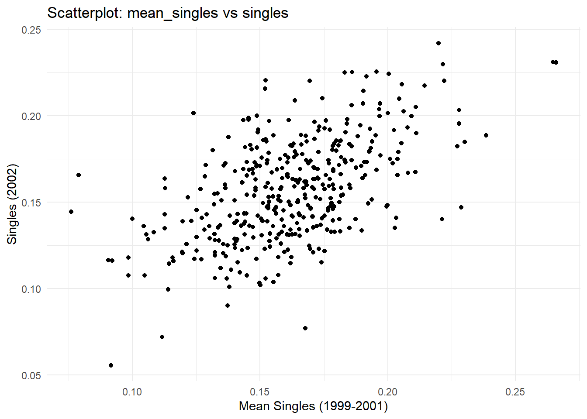
# Построение диаграммы рассеяния для BB и mean_bbggplot(combined_data_bb, aes(x = mean_bb, y = bb_02)) +geom_point() +labs(title ="Scatterplot: mean_bb vs bb",x ="Mean BB (1999-2001)", y ="BB (2002)") +theme_minimal()
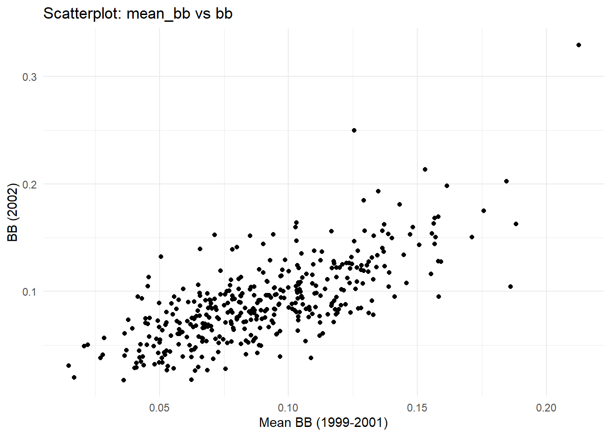
Question 12
Подгонка линейной модели для прогнозирования одиночных игр 2002 года с учетом средних значений за 1999-2001 годы.
Каков коэффициент средних значений, то есть наклон подгонки?
# Создание линейной модели для прогнозирования одиночных игр 2002 года на основе средних значений за 1999-2001 годыmodel_singles <-lm(singles_02 ~ mean_singles, data = combined_data)# Просмотр коэффициентов моделиsummary(model_singles)$coefficients
Estimate Std. Error t value Pr(>|t|)
(Intercept) 0.0621 0.00742 8.37 1.07e-15
mean_singles 0.5881 0.04511 13.04 1.70e-32
Этот код создаст линейную регрессионную модель, которая предсказывает одиночные игры в 2002 году на основе средних значений одиночных игр за 1999-2001 годы. Коэффициенты модели, включая наклон (коэффициент при mean_singles), будут выведены.
Применим линейную модель для прогнозирования bb на 2002 год с учетом среднего значения bb за 1999-2001 годы.
Каков коэффициент mean_bb, то есть наклон подгонки?
# Подгонка линейной модели для прогнозирования BB в 2002 году на основе среднего значения BB за 1999-2001 годыmodel_bb <-lm(bb_02 ~ mean_bb, data = combined_data_bb)# Просмотр коэффициентов модели, включая наклон (коэффициент при mean_bb)summary(model_bb)$coefficients
Estimate Std. Error t value Pr(>|t|)
(Intercept) 0.0155 0.00391 3.96 9.04e-05
mean_bb 0.8290 0.04076 20.34 3.22e-63
2.3: Advanced dplyr: summarize with functions and broom
2.3.1 Advanced dplyr: summarize with functions and broom
video_2.3.1
Ключевые моменты
Tibbles можно рассматривать как современную версию фреймов данных и они являются структурой данных по умолчанию в tidyverse.
Некоторые функции, которые не работают должным образом с фреймами данных, работают с tibbles.
Включение функции в summary может помочь этой функции обрабатывать сгруппированный tibble.
Пакет broom имеет три основные функции: tidy, glance и augment, которые полезны для подключения lm к системе tidyverse.
# stratify by HRdat <- Teams %>%filter(yearID %in%1961:2001) %>%mutate(HR =round(HR/G, 1), BB = BB/G,R = R/G) %>%select(HR, BB, R) %>%filter(HR >=0.4& HR<=1.2)# calculate slope of regression lines to predict runs by BB in different HR stratadat %>%group_by(HR) %>%summarize(slope =cor(BB,R)*sd(R)/sd(BB))
# combine with group_by and summarize to get the table we wantdat %>%group_by(HR) %>%summarize(tidy(lm(R ~ BB), conf.int =TRUE))
Warning: Returning more (or less) than 1 row per `summarise()` group was deprecated in
dplyr 1.1.0.
ℹ Please use `reframe()` instead.
ℹ When switching from `summarise()` to `reframe()`, remember that `reframe()`
always returns an ungrouped data frame and adjust accordingly.
`summarise()` has grouped output by 'HR'. You can override using the `.groups`
argument.
# it's a data frame so we can filter and select the rows and columns we wantdat %>%group_by(HR) %>%summarize(tidy(lm(R ~ BB), conf.int =TRUE)) %>%filter(term =="BB") %>%select(HR, estimate, conf.low, conf.high)
Warning: Returning more (or less) than 1 row per `summarise()` group was deprecated in
dplyr 1.1.0.
ℹ Please use `reframe()` instead.
ℹ When switching from `summarise()` to `reframe()`, remember that `reframe()`
always returns an ungrouped data frame and adjust accordingly.
`summarise()` has grouped output by 'HR'. You can override using the `.groups`
argument.
# visualize the table with ggplotdat %>%group_by(HR) %>%summarize(tidy(lm(R ~ BB), conf.int =TRUE)) %>%filter(term =="BB") %>%select(HR, estimate, conf.low, conf.high) %>%ggplot(aes(HR, y = estimate, ymin = conf.low, ymax = conf.high)) +geom_errorbar() +geom_point()
Warning: Returning more (or less) than 1 row per `summarise()` group was deprecated in
dplyr 1.1.0.
ℹ Please use `reframe()` instead.
ℹ When switching from `summarise()` to `reframe()`, remember that `reframe()`
always returns an ungrouped data frame and adjust accordingly.
`summarise()` has grouped output by 'HR'. You can override using the `.groups`
argument.
Assessment: Advanced dplyr, part 1
Question 1
Как видно из видео, с какой проблемой мы сталкиваемся, когда пытаемся запустить линейную модель на основе наших бейсбольных данных, группируя их по хоум-ранам?
На некоторых уровнях недостаточно данных для запуска модели.
Функция lm() не знает, как обрабатывать сгруппированные удары.
Результаты работы функции lm() не могут быть приведены в аккуратный формат.
Это происходит потому, что lm() не поддерживает работу с данными, которые сгруппированы с использованием функции group_by(). Чтобы обойти эту проблему, необходимо сначала “разгруппировать” данные или использовать такие функции, как summarize() в сочетании с lm(), чтобы выполнить модель на каждой группе отдельно, как показано в примере с tidy() из пакета broom, который помогает преобразовать результаты lm() в аккуратный формат данных.
Объяснение
Функция lm() не знает, как обрабатывать сгруппированные удары, поэтому мы не можем просто запустить линейную модель на основе данных о бейсболе, сгруппированных по хоум-ранам. Нам нужно что-то, что соединит сгруппированный удар и функцию lm().
Question 5
Вы хотите взять данные tiddle dat, которые мы использовали в видео о расширенном dplyr, и запустить линейную модель R ~ BB для каждого уровня HR. Затем вы хотите добавить три новых столбца в сгруппированный tibble: коэффициент, стандартную ошибку и p-значение для термина BB в модели.
Вы уже написали функцию get_slope(), показанную ниже.
get_slope <-function(data) { fit <-lm(R ~ BB, data = data) sum.fit <-summary(fit)data.frame(slope = sum.fit$coefficients[2, "Estimate"], se = sum.fit$coefficients[2, "Std. Error"],pvalue = sum.fit$coefficients[2, "Pr(>|t|)"])}
Напомним, что данные tibble dat определяются следующим образом:
dat <- Teams %>%filter(yearID %in%1961:2001) %>%mutate(HR =round(HR/G, 1), BB = BB/G,R = R/G) %>%select(HR, BB, R) %>%filter(HR >=0.4& HR<=1.2)
Какой дополнительный код вы могли бы написать для достижения своей цели?
dat %>%group_by(HR) %>%summarize(get_slope(across()))
Warning: There was 1 warning in `summarize()`.
ℹ In argument: `get_slope(across())`.
ℹ In group 1: `HR = 0.4`.
Caused by warning:
! Using `across()` without supplying `.cols` was deprecated in dplyr 1.1.0.
ℹ Please supply `.cols` instead.
Что всегда является результатом работы функции broom? A tibble
Question 7
Вы хотите знать, зависит ли соотношение между хоум-ранами и забегами за игру в зависимости от бейсбольной лиги. Вы создаете следующий набор данных:
dat <- Teams %>%filter(yearID %in%1961:2001) %>%mutate(HR = HR/G,R = R/G) %>%select(lgID, HR, BB, R)
Какой код помог бы вам быстро ответить на этот вопрос?
dat %>%group_by(lgID) %>%summarize(tidy(lm(R ~ HR, data =across()), conf.int = T)) %>%filter(term =="HR")
Warning: Returning more (or less) than 1 row per `summarise()` group was deprecated in
dplyr 1.1.0.
ℹ Please use `reframe()` instead.
ℹ When switching from `summarise()` to `reframe()`, remember that `reframe()`
always returns an ungrouped data frame and adjust accordingly.
`summarise()` has grouped output by 'lgID'. You can override using the
`.groups` argument.
group_by(lgID): Группирует данные по лигам (например, Американская лига и Национальная лига).
summarize(tidy(lm(R ~ HR, data = across()), conf.int = T)): Использует функцию across() для обработки группированных данных и запускает линейную регрессию lm(R ~ HR) для каждой группы (лиги). tidy() из пакета broom преобразует результаты модели в аккуратную таблицу, включая доверительные интервалы с опцией conf.int = T.
filter(term == “HR”): Фильтрует результат, чтобы показать только коэффициенты, относящиеся к переменной “HR” (хоум-раны).
Таким образом, этот код позволяет быстро оценить, как различается влияние хоум-ранов на количество забегов в разных лигах (American League и National League).
Assessment: Advanced dplyr, part 2
Мы исследовали взаимосвязь между ростом отцов и сыновей. Но как насчет других отношений между родителями и детьми? Имеет ли рост одного из родителей более сильную связь с ростом ребенка? Как пол ребенка влияет на эту взаимосвязь в отношении роста? Являются ли какие-либо различия, которые мы наблюдаем, статистически значимыми?
Набор данных galton представляет собой выборку из одного ребенка мужского и одной девочки из каждой семьи в наборе данных GaltonFamilies. В столбце “Пара” указано, является ли пара отцом и дочерью, отцом и сыном, матерью и дочерью или матерью и сыном.
Создайте набор данных galton, используя приведенный ниже код:
library(tidyverse)library(HistData)data("GaltonFamilies")# set.seed(1) # if you are using R 3.5 or earlierset.seed(1, sample.kind ="Rounding") # if you are using R 3.6 or later
Warning in set.seed(1, sample.kind = "Rounding"): non-uniform 'Rounding'
sampler used
Используйте lm() и пакет broom для построения линий регрессии для каждого типа родительско-дочерней пары. Вычислите оценки методом наименьших квадратов, стандартные ошибки, доверительные интервалы и p-значения для родительского коэффициента роста для каждой пары.
Используем lm() для построения модели для каждой пары.
Применяем broom::tidy() для получения аккуратных таблиц с оценками.
Фильтруем результат, чтобы найти коэффициент для пары “отец-дочь”.
# Построение линий регрессии и расчет коэффициентов для каждой парыresults <- galton |>group_by(pair) |>do(tidy(lm(childHeight ~ parentHeight, data = .), conf.int =TRUE)) |>filter(term =="parentHeight")# Фильтруем результат для пары "отец-дочь"father_daughter_result <- results |>filter(pair =="father_daughter")# Выводим результат для пары "отец-дочь"father_daughter_result
На каждый 1 дюйм увеличения роста матери, на сколько дюймов увеличивается рост обычного сына?
# Построение линейной модели для зависимости роста сына от роста материmother_son_model <- galton %>%filter(pair =="mother_son") %>%lm(childHeight ~ parentHeight, data = .)# Просмотр коэффициентов моделиsummary(mother_son_model)$coefficients
Estimate Std. Error t value Pr(>|t|)
(Intercept) 44.878 5.0181 8.94 4.96e-16
parentHeight 0.381 0.0784 4.86 2.59e-06
Question 10b
Какие наборы высот родителей и потомков достоверно коррелируют при пороговом значении p, равном 0,05?
father-daughter
father-son
mother-daughter
mother-son
Для того чтобы определить, какие наборы высот родителей и потомков достоверно коррелируют при пороговом значении p = 0.05, нужно рассчитать коэффициенты корреляции для каждой пары “родитель-потомок” и проверить соответствующие p-значения.
Мы можем использовать линейную регрессию для каждой пары и использовать пакет broom, чтобы получить p-значения для родительского коэффициента роста. Давайте выполним это с помощью R-кода:
Warning: Returning more (or less) than 1 row per `summarise()` group was deprecated in
dplyr 1.1.0.
ℹ Please use `reframe()` instead.
ℹ When switching from `summarise()` to `reframe()`, remember that `reframe()`
always returns an ungrouped data frame and adjust accordingly.
`summarise()` has grouped output by 'pair'. You can override using the
`.groups` argument.
При рассмотрении оценок, какие из следующих утверждений верны? Выберите ВСЕ, которые применимы.
Все доверительные интервалы перекрывают друг друга.
По крайней мере, один доверительный интервал равен нулю.
Доверительные интервалы, учитывающие рост матерей, больше, чем доверительные интервалы, учитывающие рост отцов.
Доверительные интервалы, связанные с ростом дочерей, больше, чем доверительные интервалы, связанные с ростом сыновей.
Полученные данные согласуются с тем, что наследование роста не зависит от пола ребенка.
Эти данные согласуются с тем, что наследование роста не зависит от пола родителя.
2.4: Regression and Baseball
2.4.1 Building a Better Offensive Metric for Baseball
video_2.4.1
# linear regression with two variablesfit <- Teams %>%filter(yearID %in%1961:2001) %>%mutate(BB = BB/G, HR = HR/G, R = R/G) %>%lm(R ~ BB + HR, data = .)tidy(fit, conf.int =TRUE)
Warning: Using an external vector in selections was deprecated in tidyselect 1.1.0.
ℹ Please use `all_of()` or `any_of()` instead.
# Was:
data %>% select(position_names)
# Now:
data %>% select(all_of(position_names))
See <https://tidyselect.r-lib.org/reference/faq-external-vector.html>.
Warning: `data_frame()` was deprecated in tibble 1.1.0.
ℹ Please use `tibble()` instead.
# add players' first and last names# NOTE: In old versions of the Lahman library, the "People" dataset was called "Master"# The following code may need to be modified if you have not recently updated the Lahman library.players <- People %>%select(playerID, nameFirst, nameLast, debut) %>%mutate(debut =as.Date(debut)) %>%right_join(players, by="playerID")# top 10 playersplayers %>%select(nameFirst, nameLast, POS, salary, R_hat) %>%arrange(desc(R_hat)) %>%top_n(10)
Selecting by R_hat
nameFirst nameLast POS salary R_hat
1 Barry Bonds LF 15000000 9.05
2 Todd Helton 1B 5000000 8.23
3 Manny Ramirez LF 15462727 8.20
4 Sammy Sosa RF 15000000 8.19
5 Larry Walker RF 12666667 8.15
6 Jason Giambi 1B 10428571 7.99
7 Chipper Jones LF 11333333 7.64
8 Brian Giles LF 8063003 7.57
9 Albert Pujols LF 600000 7.54
10 Nomar Garciaparra SS 9000000 7.51
# players with a higher metric have higher salariesplayers %>%ggplot(aes(salary, R_hat, color = POS)) +geom_point() +scale_x_log10()
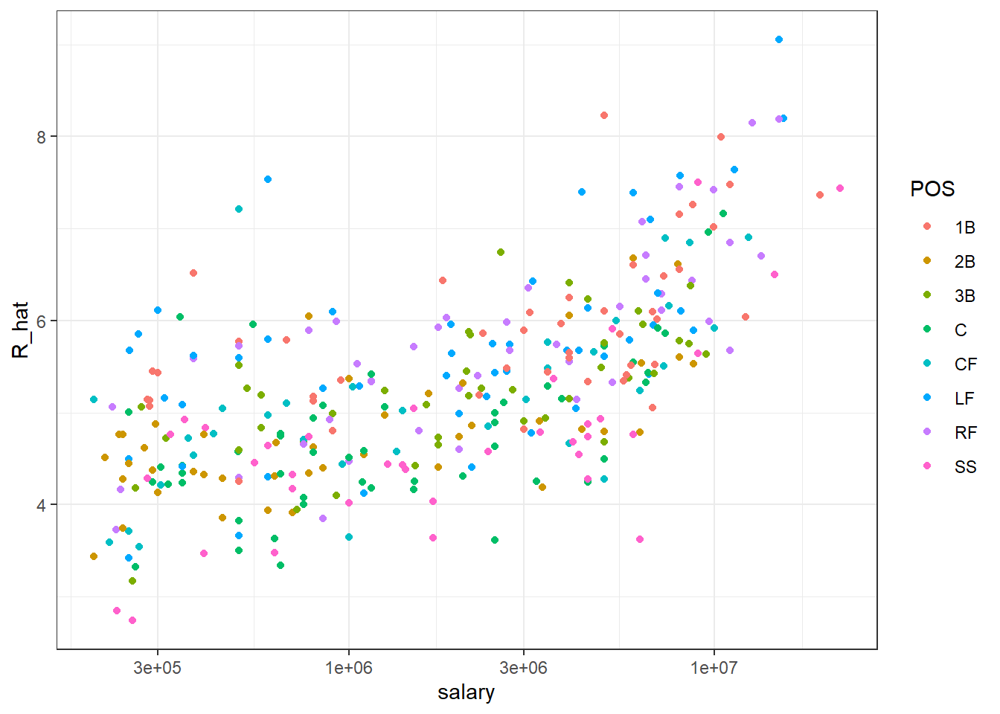
# remake plot without players that debuted after 1998library(lubridate)players %>%filter(year(debut) <1998) %>%ggplot(aes(salary, R_hat, color = POS)) +geom_point() +scale_x_log10()
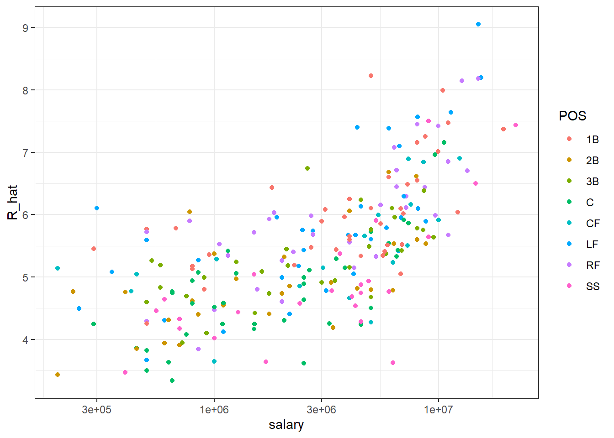
Building a Better Offensive Metric for Baseball: Linear Programming
Создание лучшей атакующей метрики для бейсбола: линейное программирование
Чтобы на самом деле подобрать игроков для команды, можно использовать то, что компьютерщики называют линейным программированием. Хотя в этом курсе мы не рассматриваем эту тему подробно, мы все равно приводим код:
Код для создания таблицы, в которой будут указаны только победители ROY Award, и добавления их статистики отбивания:
ROY <- AwardsPlayers %>%filter(awardID =="Rookie of the Year") %>%left_join(playerInfo, by="playerID") %>%rename(rookie_year = yearID) %>%right_join(Batting, by="playerID") %>%mutate(AVG = H/AB) %>%filter(POS !="P")
Код, позволяющий сохранить только сезон новичков и второкурсников и удалить игроков, которые не играли во втором сезоне:
ilter(): Оставляем только сезоны новичков и последующий сезон.
group_by(playerID): Группируем по игрокам.
mutate(rookie = ifelse(…)): Создаём новый столбец для обозначения сезона (новичок или второкурсник).
filter(n() == 2): Оставляем только тех игроков, у которых есть оба сезона.
select(): Оставляем нужные столбцы.
Код для использования функции spread, чтобы в одном столбце отображались средние показатели отбивания для новичков и второкурсников:
ROY <- ROY %>%spread(rookie, AVG) %>%arrange(desc(rookie))head(ROY,10)
# A tibble: 10 × 6
playerID rookie_year nameFirst nameLast rookie sophomore
<chr> <int> <chr> <chr> <dbl> <dbl>
1 mccovwi01 1959 Willie McCovey 0.354 0.238
2 suzukic01 2001 Ichiro Suzuki 0.350 0.321
3 bumbral01 1973 Al Bumbry 0.337 0.233
4 lynnfr01 1975 Fred Lynn 0.331 0.314
5 pujolal01 2001 Albert Pujols 0.329 0.314
6 troutmi01 2012 Mike Trout 0.326 0.323
7 braunry02 2007 Ryan Braun 0.324 0.285
8 olivato01 1964 Tony Oliva 0.323 0.321
9 hargrmi01 1974 Mike Hargrove 0.323 0.303
10 darkal01 1948 Al Dark 0.322 0.276
spread(): Преобразуем данные, чтобы создать отдельные колонки для AVG в сезоне новичка и втором сезоне (второкурсника).
arrange(desc(rookie)): Сортируем по убыванию среднего значения битья новичков.
Код для проведения аналогичного анализа всех игроков, которые играли в сезонах 2013 и 2014 годов и отбили мяч более 130 раз (минимум для победы в номинации “Новичок года”).:
# Фильтрация данных по сезонам 2013 и 2014 годовtwo_years <- Batting %>%filter(yearID %in%2013:2014) %>%group_by(playerID, yearID) %>%filter(sum(AB) >=130) %>%# Оставляем только игроков, у которых было не менее 130 выходов на биту за сезонsummarize(AVG =sum(H)/sum(AB)) %>%# Вычисляем среднее значение битья (AVG) для каждого игрока ungroup %>%# Снимаем группировкуspread(yearID, AVG) %>%# Преобразуем данные: создаем отдельные столбцы для 2013 и 2014 годовfilter(!is.na(`2013`) &!is.na(`2014`)) %>%# Убираем строки с пропущенными значениями (игроки, которые не играли оба года)left_join(playerInfo, by="playerID") %>%# Присоединяем таблицу с информацией об игроках (имя, фамилия, позиция)filter(POS !="P") %>%# Исключаем питчеровselect(-POS) %>%# Убираем столбец с позицией игрокаarrange(desc(`2013`)) %>%# Сортируем игроков по среднему значению битья в 2013 году в порядке убыванияselect(nameFirst, nameLast, `2013`, `2014`) # Оставляем только имя, фамилию и средние значения битья за 2013 и 2014 годы
`summarise()` has grouped output by 'playerID'. You can override using the
`.groups` argument.
Код, позволяющий узнать, что происходит с худшими исполнителями 2013 года:
arrange(two_years, `2013`)
# A tibble: 312 × 4
nameFirst nameLast `2013` `2014`
<chr> <chr> <dbl> <dbl>
1 Danny Espinosa 0.158 0.219
2 Dan Uggla 0.179 0.149
3 Jeff Mathis 0.181 0.2
4 B. J. Upton 0.184 0.208
5 Adam Rosales 0.190 0.262
6 Aaron Hicks 0.192 0.215
7 Chris Colabello 0.194 0.229
8 J. P. Arencibia 0.194 0.177
9 Tyler Flowers 0.195 0.241
10 Ryan Hanigan 0.198 0.218
# ℹ 302 more rows
Код, позволяющий увидеть корреляцию показателей за два разных года:
filter(yearID %in% 2013:2014): Оставляем только данные за 2013 и 2014 годы.
group_by(playerID, yearID): Группируем данные по игрокам и по годам.
filter(sum(AB) >= 130): Оставляем только тех игроков, которые набрали не менее 130 выходов на биту за сезон (это минимальное количество, необходимое для получения награды Rookie of the Year).
Расчет среднего значения битья (AVG):
summarize(AVG = sum(H)/sum(AB)): Для каждого игрока считаем среднее значение битья (AVG) как отношение числа хитов (H) к числу выходов на биту (AB).
Объединение и фильтрация:
spread(yearID, AVG): Преобразуем данные в таблицу, где средние значения битья за 2013 и 2014 годы становятся отдельными столбцами.
filter(!is.na(2013) & !is.na(2014)): Убираем строки с пропущенными значениями (если игрок не играл в один из этих сезонов).
left_join(playerInfo, by="playerID"): Присоединяем к таблице информацию об игроках (имена, фамилии и позиции).
filter(POS != "P"): Исключаем питчеров, так как они не участвуют в статистике битья так же, как полевые игроки.
arrange(desc(2013)): Сортируем данные по среднему значению битья за 2013 год в порядке убывания.
Просмотр худших результатов:
arrange(two_years,2013): Сортируем таблицу по возрастанию среднего значения битья за 2013 год, чтобы увидеть худших исполнителей.
Корреляция:
qplot(2013,2014, data = two_years): Построение диаграммы рассеяния для оценки зависимости между результатами за два года.
summarize(two_years, cor(2013,2014)): Вычисление корреляции между средними значениями битья за 2013 и 2014 годы.
video_2.4.4
Ключевые моменты
До сих пор все наши примеры линейной регрессии применялись к двум или более случайным переменным. Мы предполагаем, что пары являются двумерно-нормальными и используем это для построения линейной модели.
Линейная регрессия также используется в моделях ошибок измерений, где обычно используется неслучайная коварианта (например, время). Случайность возникает из-за ошибки измерения, а не из-за выборки или естественной изменчивости.
Код
Код для использования функции dslabs r falling_object для создания симуляций падающих шаров:
library(dslabs)falling_object <-rfalling_object()
Код для построения траектории полета мяча:
falling_object %>%ggplot(aes(time, observed_distance)) +geom_point() +ylab("Distance in meters") +xlab("Time in seconds")
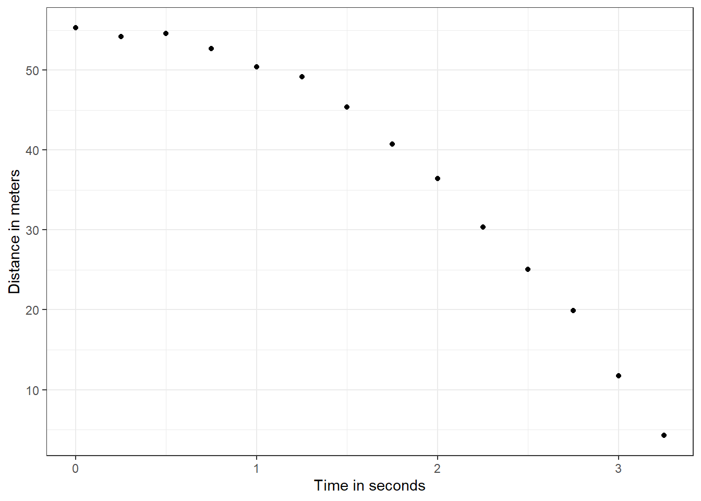
Код для использования функции lm() для оценки коэффициентов:
fit <- falling_object %>%mutate(time_sq = time^2) %>%lm(observed_distance~time+time_sq, data=.)tidy(fit)
Какую окончательную линейную модель (в видеоролике “Создание лучшей атакующей метрики для бейсбола”) мы использовали для прогнозирования бросков, набранных за игру?
lm(R ~ BB + singles + doubles + triples + HR)
Question 2
Мы хотим подсчитать количество пробежек за игру, забитых отдельными игроками, а не только командами. Какой суммарный показатель мы рассчитываем, чтобы помочь в этом?
Для получения подсказки посмотрите код из видео “Создание лучшего показателя атаки в бейсболе”.:
В качестве сводного показателя используется следующий:
pa_per_game: среднее количество появлений на поле в каждой команде за игру для каждой команды
pa_per_game: среднее количество появлений на поле в каждой игре для каждого игрока
pa_per_game: количество появлений на поле в каждой команде за игру, усредненное по всем командам
Question 3
Представьте, что у вас две команды. Команда А состоит из отбивающих, которые в среднем получают две базы по мячам, четыре одиночных, одну двойную, ни одной тройной и один хоумран. Команда В состоит из отбивающих, которые в среднем получают одну базу по мячам, шесть одиночных, два парных, один тройной и ни одного хоум-рана.
(Для удобства приведем следующие коэффициенты для модели: ВВ 0,371, одиночный разряд 0,519, парный разряд 0,771, тройной разряд 1,24 и хоум-ран 1,44.)
Какая команда набирает больше очков, как предсказывает наша модель? Team B
Формула для расчета базового процента плюс процент отбивания (OPS) такова:
Какая статистическая концепция должным образом объясняет “спад на втором курсе”?
Регрессия к среднему значению
Закон средних значений
Нормальное распределение
Question 6
В нашей модели зависимости времени от наблюдаемого расстояния в видеоролике “Модели ошибок измерений” случайность наших данных была обусловлена:
sampling
естественная изменчивость
погрешность измерения
Question 7
Какие из перечисленных ниже важных допущений относительно ошибок измерений в эксперименте представлены в видеоролике “Модели ошибок измерений”?
Погрешность измерения случайна
Погрешность измерения независима
Погрешность измерения имеет одинаковое распределение в каждый момент времени i
Question 8
Какой из следующих сценариев нарушил бы допущение нашей модели погрешности измерений?
Эксперимент проводился на Луне.
В одном месте было особенно трудно разглядеть упавший мяч.
Эксперимент повторили всего 10 раз, а не 100 раз.
Assessment: Regression and baseball, part 2
Question 9a
Используйте фрейм данных Teams из пакета Lahman. Примените модель многомерной линейной регрессии, чтобы получить влияние BB и HR на результаты заездов (R) в 1971 году. Используйте функцию tidy() в пакете broom, чтобы получить результаты в виде фрейма данных.
Какова оценка влияния BB на пробеги?
Какова оценка влияния HR на пробежки?
# Загрузка необходимых библиотекlibrary(Lahman)library(dplyr)library(broom)# Фильтрация данных за 1971 годteams_1971 <- Teams %>%filter(yearID ==1971)# Применение модели множественной линейной регрессииmodel <-lm(R ~ BB + HR, data = teams_1971)# Получение результатов с помощью функции tidy() из пакета broomresults <-tidy(model)# Просмотр результатовresults
Интерпретируйте p-значения для оценок, используя предельное значение 0,05 и рассматривая 1971 год в качестве выборки, чтобы сделать вывод о количестве участников всех бейсбольных игр за разные годы.
Какая из приведенных ниже интерпретаций правильная?
Как BB, так и HR оказывают ненулевое влияние на количество пробежек.
HR оказывает значительное влияние на количество пробежек, но доказательств недостаточно, чтобы предположить, что BB также влияет.
BB оказывает значительное влияние на количество пробежек, но доказательств недостаточно, чтобы предположить, что HR также влияет.
Ни BB, ни HR не оказывают статистически значимого влияния на количество пробежек.
GPT
Для интерпретации p-значений оценок регрессии, используя пороговое значение 0.05, давайте рассмотрим возможные интерпретации. В данном случае p-значения позволяют нам судить о том, оказывают ли независимые переменные (BB и HR) статистически значимое влияние на зависимую переменную (количество пробежек, R).
Если p-значение < 0.05, это означает, что влияние переменной на зависимую переменную статистически значимо.
Если p-значение ≥ 0.05, это означает, что у нас недостаточно доказательств, чтобы предположить, что переменная оказывает влияние на зависимую переменную.
Возможные интерпретации:
Как BB, так и HR оказывают ненулевое влияние на количество пробежек: Оба p-значения для BB и HR меньше 0.05, что означает, что обе переменные оказывают статистически значимое влияние на количество пробежек.
HR оказывает значительное влияние на количество пробежек, но доказательств недостаточно, чтобы предположить, что BB также влияет: p-значение для HR < 0.05, а для BB ≥ 0.05, что означает, что только HR оказывает значительное влияние.
BB оказывает значительное влияние на количество пробежек, но доказательств недостаточно, чтобы предположить, что HR также влияет: p-значение для BB < 0.05, а для HR ≥ 0.05, что означает, что только BB оказывает значительное влияние.
Ни BB, ни HR не оказывают статистически значимого влияния на количество пробежек: Оба p-значения для BB и HR ≥ 0.05, что означает, что недостаточно доказательств, чтобы предположить, что какие-либо из переменных оказывают влияние.
Чтобы выбрать правильную интерпретацию:
После запуска кода с использованием tidy() вы сможете увидеть p-значения для каждой переменной (BB и HR). Опираясь на них, выберите соответствующую интерпретацию:
Если оба p-значения меньше 0.05, верно первое утверждение.
Если p-значение только для HR меньше 0.05, верно второе утверждение.
Если p-значение только для BB меньше 0.05, верно третье утверждение.
Если оба p-значения больше или равны 0.05, верно четвертое утверждение.
Question 10
Повторите описанное выше упражнение, чтобы определить влияние BB и HR на пробеги (R) за каждый год с 1961 по 2018 год, используя summary() и пакет broom.
Составьте диаграмму рассеяния для оценки влияния BB на прогоны с течением времени и добавьте линию тренда с доверительными интервалами.
Заполните пробел, чтобы завершить утверждение:
Влияние BB на прогоны с течением времени увеличивалось.
Шаг 1: Определить влияние BB и HR на пробеги за каждый год с 1961 по 2018 год
library(Lahman)library(dplyr)library(broom)library(ggplot2)# Фильтрация данных по годам с 1961 по 2018results <- Teams %>%filter(yearID >=1961& yearID <=2018) %>%group_by(yearID) %>%do(tidy(lm(R ~ BB + HR, data = .), conf.int =TRUE)) %>%filter(term =="BB") %>%# Оставляем только результаты для переменной BBselect(yearID, estimate, std.error, conf.low, conf.high) # Оставляем только нужные столбцы# Просмотр результатовhead(results)
# Построение диаграммы рассеяния влияния BB на прогоны по годамggplot(results, aes(x = yearID, y = estimate)) +geom_point() +geom_smooth(method ="lm", se =TRUE) +# Линия тренда с доверительными интерваламиlabs(title ="Влияние BB на количество пробегов с течением времени",x ="Год",y ="Оценка влияния BB на прогоны")
`geom_smooth()` using formula = 'y ~ x'
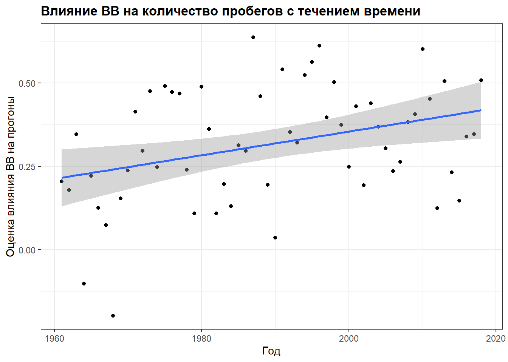
Question 11
Примените линейную модель к результатам из вопроса 10, чтобы определить влияние года на воздействие BB. То есть определите, как расчетные коэффициенты BB из моделей в вопросе 10 могут быть предсказаны по годам (напомним, что мы сгруппировали данные по годам перед подгонкой моделей, поэтому у нас разные расчетные коэффициенты для каждого года).
На какую величину меняется влияние BB на тиражи с каждым дополнительным годом? 0.00355
What is the p-value for this effect? 0.00807
GPT
Шаг 3: Определить, как влияние BB меняется с каждым годом
Для этого необходимо построить линейную модель, которая предсказывает коэффициенты BB по годам:
# Применение линейной модели для оценки изменения влияния BB с каждым годомbb_trend <-lm(estimate ~ yearID, data = results)# Вывод результатов моделиsummary(bb_trend)
Call:
lm(formula = estimate ~ yearID, data = results)
Residuals:
Min 1Q Median 3Q Max
-0.4388 -0.1077 -0.0043 0.1185 0.3292
Coefficients:
Estimate Std. Error t value Pr(>|t|)
(Intercept) -6.74629 2.57102 -2.62 0.0112 *
yearID 0.00355 0.00129 2.75 0.0081 **
---
Signif. codes: 0 '***' 0.001 '**' 0.01 '*' 0.05 '.' 0.1 ' ' 1
Residual standard error: 0.165 on 56 degrees of freedom
Multiple R-squared: 0.119, Adjusted R-squared: 0.103
F-statistic: 7.55 on 1 and 56 DF, p-value: 0.00807
Шаг 4: Интерпретация результатов
Диаграмма рассеяния с линией тренда покажет, как изменялось влияние BB на пробеги с течением времени.
Результаты модели bb_trend покажут, на сколько изменяется влияние BB на пробеги с каждым годом.
Итог:
Заполним утверждение:
Влияние BB на прогоны с течением времени увеличивалось, если коэффициент при переменной yearID в модели bb_trend будет положительным, что указывает на рост влияния BB на прогоны по мере времени.
Ответ на вопрос:
После выполнения кода в шаге 3, коэффициент при переменной yearID из модели bb_trend покажет, на сколько изменяется влияние BB на количество пробегов с каждым дополнительным годом.
Assessment: Linear Models (Verified Learners only)
В этом тесте есть 6 вопросов, состоящих из нескольких частей, для каждого из которых используется приведенная ниже схема.
Посещаемость бейсбольных матчей частично зависит от того, насколько хорошо играет команда.
Загрузите библиотеку Lehman. Во фрейме данных о командах содержится столбец посещаемости. Это общая посещаемость за сезон. Чтобы рассчитать среднюю посещаемость, разделите ее на количество сыгранных игр следующим образом:
library(tidyverse)library(broom)library(Lahman)Teams_small <- Teams %>%filter(yearID %in%1961:2001) %>%mutate(avg_attendance = attendance/G)
Используйте линейные модели, чтобы ответить на следующий вопрос из 3 частей о Teams_small.
Question 1a
Используйте количество забегов (R) за игру, чтобы предсказать среднюю посещаемость.
На сколько увеличивается средняя посещаемость за каждый 1 забег за игру? 18.92
GPT
# Загрузка библиотекlibrary(tidyverse)library(broom)library(Lahman)# find regression line predicting attendance from R and take slopeTeams_small %>%mutate(R_per_game = R/G) %>%lm(avg_attendance ~ R_per_game, data = .) %>% .$coef %>% .[2] # Вывод оценки влияния (наклона)
R_per_game
4117
Используйте количество хоум-ранов (HR) на игру, чтобы предсказать среднюю посещаемость.
На сколько увеличивается средняя посещаемость на каждый 1 хоум-ран за игру?
Teams_small %>%mutate(HR_per_game = HR/G) %>%lm(avg_attendance ~ HR_per_game, data = .) %>% .$coef %>% .[2] # Вывод оценки влияния (наклона)
HR_per_game
8113
Question 1b
Используйте количество побед для прогнозирования средней посещаемости; не учитывайте количество игр.
На сколько увеличивается средняя посещаемость с каждой выигранной игрой за сезон? 121.1
# Загрузка библиотекlibrary(tidyverse)library(Lahman)# Фильтрация данныхTeams_small <- Teams %>%filter(yearID %in%1961:2001) %>%mutate(avg_attendance = attendance / G)# Оценка влияния количества побед на среднюю посещаемостьmodel_wins <-lm(avg_attendance ~ W, data = Teams_small)# Получение результатовsummary(model_wins)
Call:
lm(formula = avg_attendance ~ W, data = Teams_small)
Residuals:
Min 1Q Median 3Q Max
-8113 -3515 -613 2875 20500
Coefficients:
Estimate Std. Error t value Pr(>|t|)
(Intercept) 1129.2 900.3 1.25 0.21
W 121.1 11.2 10.79 <2e-16 ***
---
Signif. codes: 0 '***' 0.001 '**' 0.01 '*' 0.05 '.' 0.1 ' ' 1
Residual standard error: 4570 on 1024 degrees of freedom
Multiple R-squared: 0.102, Adjusted R-squared: 0.101
F-statistic: 116 on 1 and 1024 DF, p-value: <2e-16
Описание:
lm(avg_attendance ~ W): Линейная модель предсказывает среднюю посещаемость на основе количества побед (W).
summary(model_wins): Выводит результаты модели, включая оценку коэффициента для переменной побед (W).
Ответ:
Оценка коэффициента при переменной W покажет, на сколько увеличивается средняя посещаемость за каждую дополнительную победу за сезон.
Предположим, команда не выиграла ни одной игры за сезон.
Спрогнозируйте среднюю посещаемость.
GPT
Чтобы спрогнозировать среднюю посещаемость, если команда не выиграла ни одной игры за сезон (то есть W=0), можно использовать модель линейной регрессии, которую мы построили ранее. Прогноз для W=0 будет равен пересечению (intercept) модели.
Вот как можно это сделать:
# Загрузка библиотекlibrary(tidyverse)library(Lahman)# Фильтрация данных и расчет средней посещаемостиTeams_small <- Teams %>%filter(yearID %in%1961:2001) %>%mutate(avg_attendance = attendance / G)# Построение линейной модели для предсказания средней посещаемости на основе количества победmodel_wins <-lm(avg_attendance ~ W, data = Teams_small)# Получение пересечения (intercept) моделиintercept <-coef(model_wins)[1]# Вывод пересеченияintercept
(Intercept)
1129
Объяснение:
lm(avg_attendance ~ W): Модель линейной регрессии предсказывает среднюю посещаемость на основе количества побед.
coef(model_wins)[1]: Пересечение (intercept) модели — это прогнозируемая средняя посещаемость, если команда не выиграла ни одной игры (то есть W=0).
Ответ:
Значение пересечения (intercept) будет прогнозируемой средней посещаемостью для команды, которая не выиграла ни одной игры за сезон.
Question 1c
Используйте год для прогнозирования средней посещаемости.
Насколько увеличивается средняя посещаемость с каждым годом? 244.5
GPT
Чтобы спрогнозировать среднюю посещаемость на основе года и определить, насколько средняя посещаемость увеличивается с каждым годом, можно использовать линейную регрессионную модель, где независимая переменная — это год, а зависимая переменная — средняя посещаемость.
# Фильтрация данных и расчет средней посещаемостиTeams_small <- Teams %>%filter(yearID %in%1961:2001) %>%mutate(avg_attendance = attendance / G)# Построение модели для предсказания средней посещаемости на основе годаmodel_year <-lm(avg_attendance ~ yearID, data = Teams_small)# Вывод результатовsummary(model_year)
Call:
lm(formula = avg_attendance ~ yearID, data = Teams_small)
Residuals:
Min 1Q Median 3Q Max
-11305 -2795 -404 2308 14486
Coefficients:
Estimate Std. Error t value Pr(>|t|)
(Intercept) -473936.9 20631.6 -23.0 <2e-16 ***
yearID 244.5 10.4 23.5 <2e-16 ***
---
Signif. codes: 0 '***' 0.001 '**' 0.01 '*' 0.05 '.' 0.1 ' ' 1
Residual standard error: 3890 on 1024 degrees of freedom
Multiple R-squared: 0.35, Adjusted R-squared: 0.35
F-statistic: 552 on 1 and 1024 DF, p-value: <2e-16
Описание:
lm(avg_attendance ~ yearID): Модель линейной регрессии предсказывает среднюю посещаемость на основе года (yearID).
summary(model_year): Выводит результаты модели, включая оценку коэффициента для переменной года.
Ответ:
Оценка коэффициента при переменной yearID покажет, насколько увеличивается средняя посещаемость с каждым годом. Это значение будет указано в столбце Estimate в выводе функции summary(model_year).
Question 2
Выигрыши в играх, забеги за игру и хоум-раны за игру положительно коррелируют с посещаемостью. В материалах курса мы видели, что забеги за игру и хоум-раны за игру коррелируют друг с другом. Коррелируют ли выигрыши и забеги за игру или победы и хоум-ран за игру? Воспользуйтесь данными Teams_small еще раз.
Каков коэффициент корреляции между пробегами за игру и победами?
# Фильтрация данных и расчет средней посещаемостиTeams_small <- Teams %>%filter(yearID %in%1961:2001) %>%mutate(R_per_game = R / G) # Рассчитываем забеги за игру# Рассчитываем коэффициент корреляции между пробегами за игру и победамиcorrelation_R_W <-cor(Teams_small$R_per_game, Teams_small$W)# Вывод коэффициента корреляцииcorrelation_R_W
[1] 0.412
Каков коэффициент корреляции между хоум-ранами за игру и победами?
# Фильтрация данных и расчет хоум-ранов за игруTeams_small <- Teams %>%filter(yearID %in%1961:2001) %>%mutate(HR_per_game = HR / G) # Рассчитываем хоум-раны за игру# Рассчитываем коэффициент корреляции между хоум-ранами за игру и победамиcorrelation_HR_W <-cor(Teams_small$HR_per_game, Teams_small$W)# Вывод коэффициента корреляцииcorrelation_HR_W
[1] 0.274
Распределите Teams_small по победам: разделите количество побед на 10, а затем округлите до ближайшего целого числа. Отфильтруйте, чтобы сохранить только слои с 5 по 10. (Остальные слои содержат менее 20 точек данных, что слишком мало для нашего анализа).
Используйте стратифицированный набор данных, чтобы ответить на этот вопрос, состоящий из трех частей.
Question 3a
Сколько наблюдений в группе из 8 побед? (Обратите внимание, что из-за разделения и округления у этих команд 75-85 побед).
# Фильтрация данных и расчет средней посещаемостиTeams_small <- Teams %>%filter(yearID %in%1961:2001) %>%mutate(avg_attendance = attendance / G)# Распределение по победам: делим на 10 и округляемTeams_small <- Teams_small %>%mutate(W_group =round(W /10)) %>%# Делим количество побед на 10 и округляемfilter(W_group >=5& W_group <=10) # Сохраняем только группы с 5 по 10# Подсчет количества наблюдений в группе с 8 победамиn_observations_8_wins <- Teams_small %>%filter(W_group ==8) %>%nrow() # Подсчет количества строк# Вывод количества наблюдений в группе с 8 победамиn_observations_8_wins
[1] 338
Question 3c
Что из приведенного ниже верно относительно влияния twinstrata на среднюю посещаемость? Выберите ВСЕ, что применимо.
Во всех twinstrata количество забегов за игру положительно коррелирует со средней посещаемостью.
Забеги за игру сильнее всего влияют на посещаемость, когда команда выигрывает много игр.
После учета количества побед хоум-раны в каждой игре не коррелируют с посещаемостью.
Хоум-раны в каждой игре сильнее всего влияют на посещаемость, когда команда выигрывает не так много игр.
Среди команд с одинаковым количеством побед команды с большим количеством хоум-ранов в каждой игре имеют более высокую среднюю посещаемость.
Question 4
Используйте многофакторную регрессию, определяющую влияние количества забегов за игру, хоум-ранов за игру, побед и средней посещаемости за год. Используйте исходный столбец Teams_small wins, а не страту побед из вопроса 3.
Как оценивается влияние количества пробежек за игру на среднюю посещаемость? 322
Как оценивается влияние хоум-ранов на среднюю посещаемость каждой игры? 1798
Как вы оцениваете влияние количества побед в сезоне на среднюю посещаемость? 117
# Загрузка библиотекlibrary(tidyverse)library(broom)library(Lahman)# Фильтрация данных и расчет средней посещаемостиTeams_small <- Teams %>%filter(yearID %in%1961:2001) %>%mutate(avg_attendance = attendance / G,R_per_game = R / G, # Забеги за игруHR_per_game = HR / G) # Хоум-раны за игру# Построение многофакторной линейной моделиmodel_multi <-lm(avg_attendance ~ R_per_game + HR_per_game + W + yearID, data = Teams_small)# Получение результатов моделиresults_multi <-tidy(model_multi)# Просмотр результатовresults_multi
Используйте модель многомерной регрессии из вопроса 4. Предположим, что команда в среднем набирала 5 очков за игру, 1,2 хоум-рана за игру и выиграла 80 игр за сезон. Используйте функцию predict() для создания прогнозов для этой команды.
Какой была бы средняя посещаемость этой команды в 2002 году? 16149
Какой была бы средняя посещаемость этой команды в 1960 году? 6505
# Загрузка библиотекlibrary(tidyverse)library(broom)library(Lahman)# Фильтрация данных и расчет средней посещаемостиTeams_small <- Teams %>%filter(yearID %in%1961:2001) %>%mutate(avg_attendance = attendance / G,R_per_game = R / G, # Забеги за игруHR_per_game = HR / G) # Хоум-раны за игру# Построение многофакторной линейной моделиmodel_multi <-lm(avg_attendance ~ R_per_game + HR_per_game + W + yearID, data = Teams_small)# Создание нового data frame для прогнозированияnew_data_2002 <-data.frame(R_per_game =5,HR_per_game =1.2,W =80,yearID =2002)new_data_1960 <-data.frame(R_per_game =5,HR_per_game =1.2,W =80,yearID =1960)# Прогнозирование для 2002 годаpredicted_attendance_2002 <-predict(model_multi, new_data_2002)# Прогнозирование для 1960 годаpredicted_attendance_1960 <-predict(model_multi, new_data_1960)# Вывод результатовpredicted_attendance_2002
1
16149
predicted_attendance_1960
1
6505
Question 6
Используйте свою модель из вопроса 4, чтобы спрогнозировать среднюю посещаемость команд в 2002 году в исходном массиве данных о командах.
Какова корреляция между прогнозируемой посещаемостью и фактической посещаемостью?
Для того чтобы спрогнозировать среднюю посещаемость команд в 2002 году, используя модель из вопроса 4, вам нужно будет создать новый набор данных с предполагаемыми значениями для забегов за игру (R_per_game), хоум-ранов за игру (HR_per_game) и побед (W) из оригинального набора данных Teams, а затем применить модель для этих значений. После этого вы сможете рассчитать корреляцию между прогнозируемой и фактической посещаемостью.
# Фильтрация данных и расчет средней посещаемостиTeams_small <- Teams %>%filter(yearID %in%1961:2001) %>%mutate(avg_attendance = attendance / G,R_per_game = R / G, # Забеги за игруHR_per_game = HR / G) # Хоум-раны за игру# Построение многофакторной линейной моделиmodel_multi <-lm(avg_attendance ~ R_per_game + HR_per_game + W + yearID, data = Teams_small)# Получение прогнозов для 2002 года# Мы сначала создадим новый фрейм данных для всех команд в 2002 годуTeams_2002 <- Teams %>%filter(yearID ==2002) %>%mutate(R_per_game = R / G,HR_per_game = HR / G)# Прогнозируем среднюю посещаемость для 2002 годаTeams_2002$predicted_attendance <-predict(model_multi, newdata = Teams_2002)# Теперь мы можем рассчитать корреляцию между прогнозируемой и фактической посещаемостьюcorrelation <-cor(Teams_2002$predicted_attendance, Teams_2002$attendance / Teams_2002$G)# Вывод корреляцииcorrelation
[1] 0.519
Объяснение:
Фильтрация данных: Мы сначала фильтруем данные, чтобы получить среднюю посещаемость и рассчитываем забеги и хоум-раны за игру.
Создание модели: Мы строим модель множественной линейной регрессии с учетом забегов, хоум-ранов, побед и года.
Прогнозирование: Используя модель, мы прогнозируем среднюю посещаемость для данных команд в 2002 году.
Корреляция: Рассчитываем корреляцию между фактической посещаемостью и прогнозируемой посещаемостью.
Ответ:
После выполнения этого кода вы получите значение корреляции между прогнозируемой посещаемостью и фактической посещаемостью для команд в 2002 году.
SECTION 3: Confounding Overview / Сбивающий с толку обзор
В разделе, посвященном путанице, вы узнаете, что, возможно, является самым важным уроком статистики: корреляция не является причинно-следственной связью.
После завершения этого раздела вы сможете:
Определить примеры ложной корреляции и объяснить, как искажение данных может привести к ложной корреляции.
Объясните, как отклонения могут влиять на корреляцию, и научитесь корректировать их с помощью корреляции Спирмена.
Объясните, как изменение причинно-следственной связи может привести к тому, что ассоциации будут перепутаны с причинно-следственной связью.
Поймите, как искажающие факторы могут привести к неправильному толкованию ассоциаций.
Объясните и приведите примеры парадокса Симпсона.
В этом разделе есть одна часть: Корреляция - это не причинно-следственная связь. В конце этой части есть проверка понимания, а также оценка в конце раздела только для проверенных учащихся.
Мы рекомендуем вам использовать R для интерактивной проверки ваших ответов и дальнейшего обучения. Если вы застряли, мы рекомендуем вам поискать ответ на свой вопрос на досках обсуждений или обратиться к нам за помощью!
3.1.1 Correlation is Not Causation: Spurious Correlation
video_3.1.1
Ключевые моменты
Связь/корреляция не является причинно-следственной связью.
p-хакинг является предметом многочисленных дискуссий, поскольку это проблема научных публикаций. Поскольку издатели склонны предпочитать статистически значимые результаты отрицательным, существует стимул сообщать о значимых результатах.CODE
# generate the Monte Carlo simulationN <-25g <-1000000sim_data <-tibble(group =rep(1:g, each = N), x =rnorm(N * g), y =rnorm(N * g))# calculate correlation between X,Y for each groupres <- sim_data %>%group_by(group) %>%summarize(r =cor(x, y)) %>%arrange(desc(r))res
# plot points from the group with maximum correlationsim_data %>%filter(group == res$group[which.max(res$r)]) %>%ggplot(aes(x, y)) +geom_point() +geom_smooth(method ="lm")
`geom_smooth()` using formula = 'y ~ x'
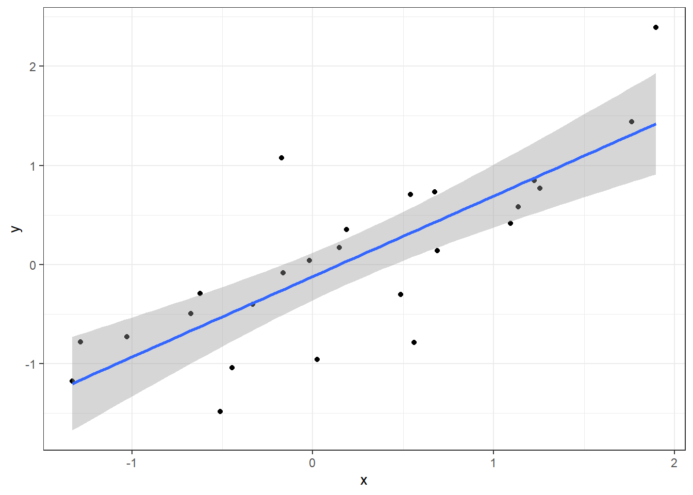
# histogram of correlation in Monte Carlo simulationsres %>%ggplot(aes(x=r)) +geom_histogram(binwidth =0.1, color ="black")
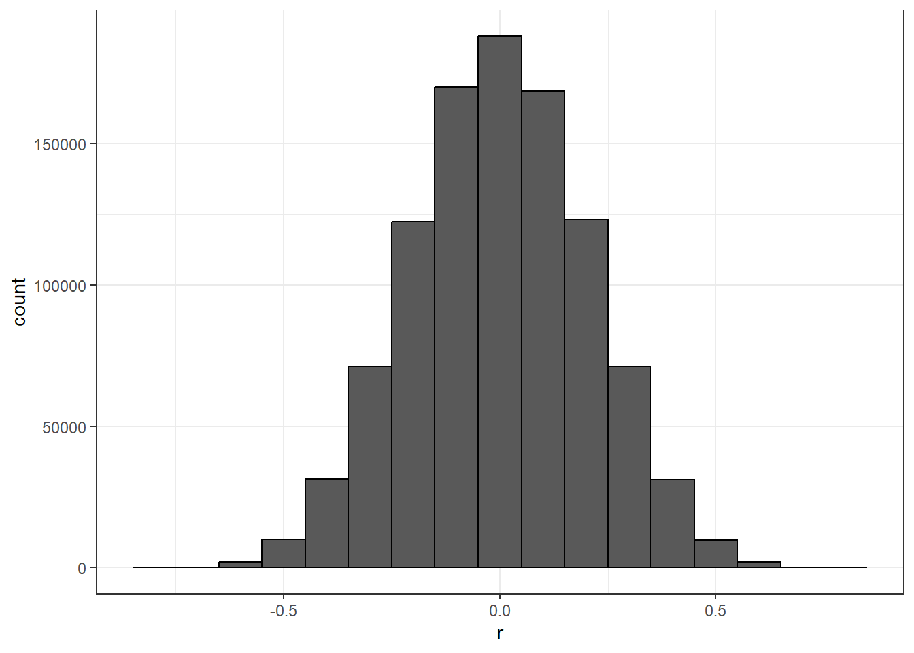
# linear regression on group with maximum correlationlibrary(broom)sim_data %>%filter(group == res$group[which.max(res$r)]) %>%summarize(tidy(lm(y ~ x)))
Warning: Returning more (or less) than 1 row per `summarise()` group was deprecated in
dplyr 1.1.0.
ℹ Please use `reframe()` instead.
ℹ When switching from `summarise()` to `reframe()`, remember that `reframe()`
always returns an ungrouped data frame and adjust accordingly.
# A tibble: 2 × 5
term estimate std.error statistic p.value
<chr> <dbl> <dbl> <dbl> <dbl>
1 (Intercept) -0.121 0.116 -1.04 0.309
2 x 0.812 0.130 6.27 0.00000213
3.1.2 Correlation is Not Causation: Outliers
video_3.1.2
Ключевые моменты
Корреляции могут быть вызваны выбросами.
Корреляция Спирмена рассчитывается на основе рангов данных.
Code
# simulate independent X, Y and standardize all except entry 23# note that you may get different values than those shown in the video depending on R versionset.seed(1985)x <-rnorm(100,100,1)y <-rnorm(100,84,1)x[-23] <-scale(x[-23])y[-23] <-scale(y[-23])# plot shows the outlierqplot(x, y, alpha =0.5)
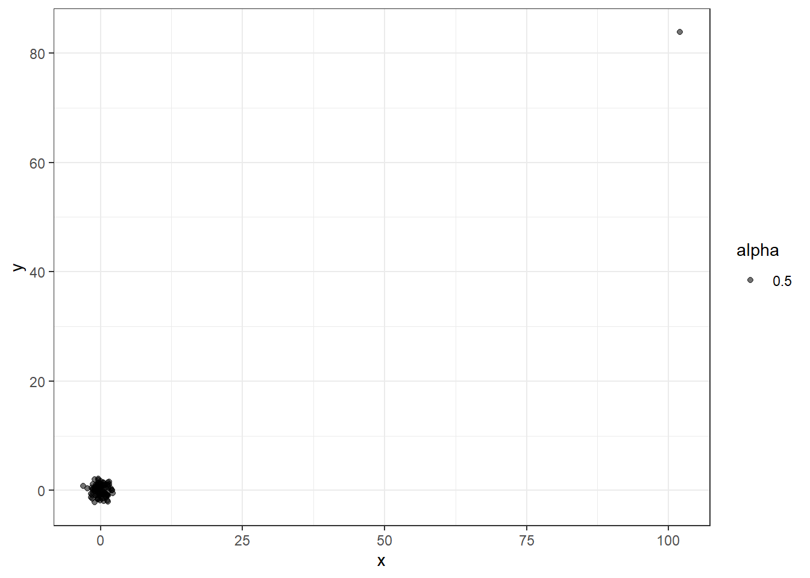
# outlier makes it appear there is correlationcor(x,y)
[1] 0.988
cor(x[-23], y[-23])
[1] -0.0442
# use rank insteadqplot(rank(x), rank(y))
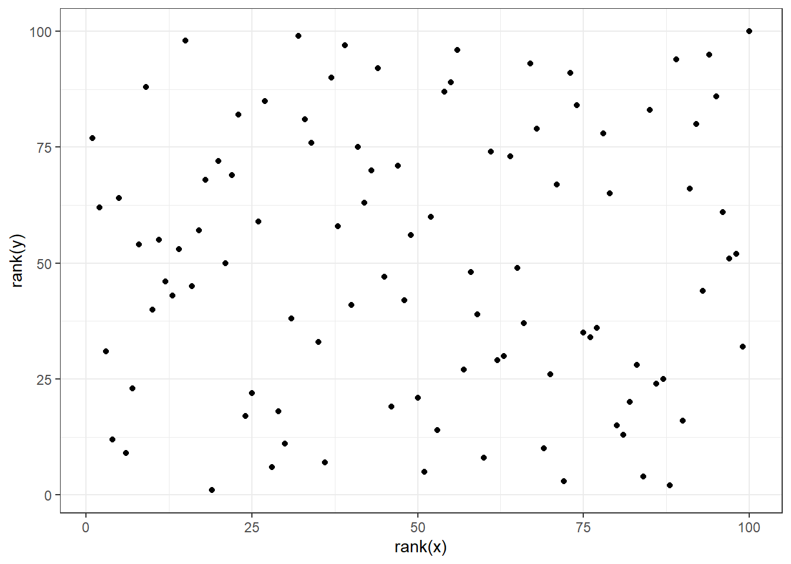
cor(rank(x), rank(y))
[1] 0.00251
# Spearman correlation with cor functioncor(x, y, method ="spearman")
[1] 0.00251
3.1.3 Correlation is Not Causation: Reversing Cause and Effect
video_3.1.3
Ключевые моменты
Еще один способ, которым ассоциацию можно спутать с причинно-следственной связью, - это когда причина и следствие меняются местами.
Как обсуждалось в видео, в данных Гальтона, когда отец и сын поменялись местами в регрессии, модель была технически корректной. Оценки и p-значения также были получены правильно. Неверной была интерпретация модели.
Code
# cause and effect reversal using son heights to predict father heightslibrary(HistData)data("GaltonFamilies")set.seed(1983)galton_heights <- GaltonFamilies %>%filter(gender =="male") %>%group_by(family) %>%sample_n(1) %>%ungroup() %>%select(father, childHeight) %>%rename(son = childHeight)galton_heights %>%summarize(tidy(lm(father ~ son)))
Warning: Returning more (or less) than 1 row per `summarise()` group was deprecated in
dplyr 1.1.0.
ℹ Please use `reframe()` instead.
ℹ When switching from `summarise()` to `reframe()`, remember that `reframe()`
always returns an ungrouped data frame and adjust accordingly.
# A tibble: 2 × 5
term estimate std.error statistic p.value
<chr> <dbl> <dbl> <dbl> <dbl>
1 (Intercept) 45.2 4.24 10.7 8.44e-21
2 son 0.345 0.0612 5.64 6.72e- 8
3.1.4 Correlation is Not Causation: Confounders
video_3.1.4
Ключевые моменты
Если X и Y коррелируют, мы называем Z искажающим фактором, если изменения в Z вызывают изменения как в X, так и в Y.
major gender admitted applicants
1 A men 62 825
2 B men 63 560
3 C men 37 325
4 D men 33 417
5 E men 28 191
6 F men 6 373
7 A women 82 108
8 B women 68 25
9 C women 34 593
10 D women 35 375
11 E women 24 393
12 F women 7 341
# percent men and women acceptedadmissions %>%group_by(gender) %>%summarize(percentage =round(sum(admitted*applicants)/sum(applicants),1))
# A tibble: 2 × 2
gender percentage
<chr> <dbl>
1 men 44.5
2 women 30.3
# test whether gender and admission are independentadmissions %>%group_by(gender) %>%summarize(total_admitted =round(sum(admitted /100* applicants)), not_admitted =sum(applicants) -sum(total_admitted)) %>%select(-gender) %>%summarize(tidy(chisq.test(.)))
# A tibble: 1 × 4
statistic p.value parameter method
<dbl> <dbl> <int> <chr>
1 91.6 1.06e-21 1 Pearson's Chi-squared test with Yates' continuit…
# percent admissions by majoradmissions %>%select(major, gender, admitted) %>%pivot_wider(names_from = gender, values_from = admitted) %>%mutate(women_minus_men = women - men)
# A tibble: 6 × 4
major men women women_minus_men
<chr> <dbl> <dbl> <dbl>
1 A 62 82 20
2 B 63 68 5
3 C 37 34 -3
4 D 33 35 2
5 E 28 24 -4
6 F 6 7 1
# plot total percent admitted to major versus percent women applicantsadmissions %>%group_by(major) %>%summarize(major_selectivity =sum(admitted * applicants) /sum(applicants),percent_women_applicants =sum(applicants * (gender=="women")) /sum(applicants) *100) %>%ggplot(aes(major_selectivity, percent_women_applicants, label = major)) +geom_text()
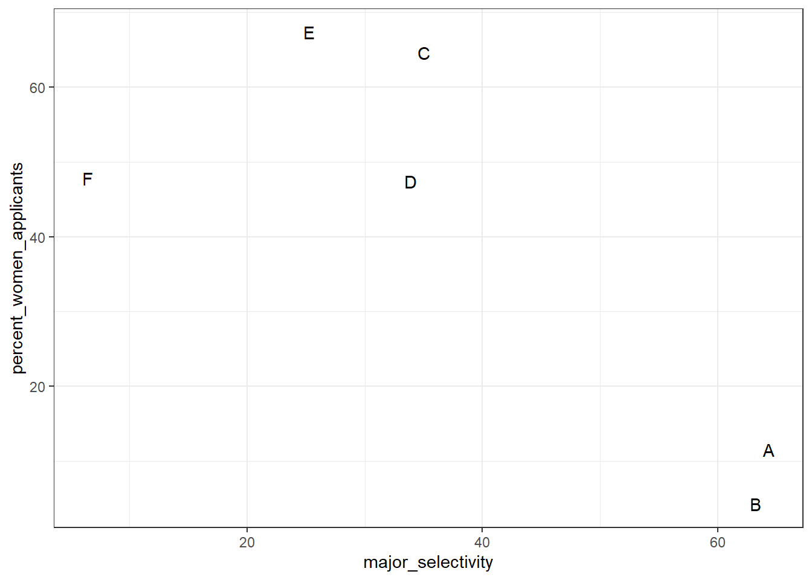
# plot percent of applicants accepted by genderadmissions %>%mutate(percent_admitted = admitted*applicants/sum(applicants)) %>%ggplot(aes(gender, y = percent_admitted, fill = major)) +geom_bar(stat ="identity", position ="stack")
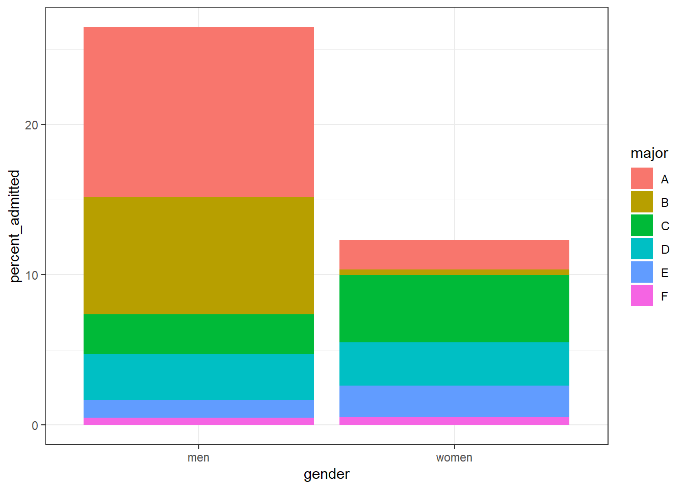
# plot admissions stratified by majoradmissions %>%ggplot(aes(major, admitted, col = gender, size = applicants)) +geom_point()
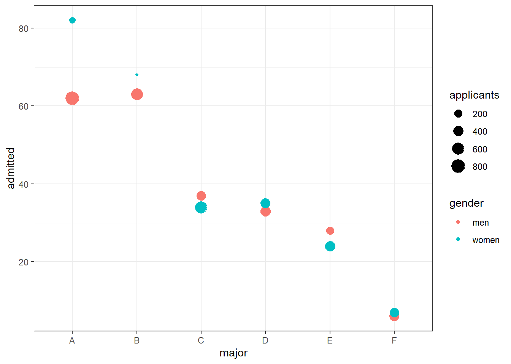
# average difference by majoradmissions %>%group_by(gender) %>%summarize(average =mean(admitted))
# A tibble: 2 × 2
gender average
<chr> <dbl>
1 men 38.2
2 women 41.7
3.1.5 Simpson’s Paradox
video_3.1.5
Ключевой момент
Парадокс Симпсона возникает, когда мы видим изменение корреляции при сравнении всего набора данных с конкретными стратами.
Assessment: Correlation is Not Causation
Question 1
В видеороликах мы провели миллион тестов корреляции для двух случайных величин, X и Y. Сколько из этих корреляций, по вашему мнению, имели бы значимое значение p ( p <= 0.5 ), просто случайно? Правильный 50000. В этом примере вероятность обнаружения корреляции, когда ее не существует, составляет 0,05*1 000 000 шансов.
Question 2
Какие из приведенных ниже примеров являются примерами p-взлома?
Ищем связи между результатом и несколькими воздействиями и сообщаем только о том, которое является существенным.
Пробуем несколько разных моделей и выбираем ту, которая дает наименьшее значение p.
Повторяем эксперимент несколько раз и сообщаем только о той, которая имеет наименьшее значение p.
Использование в анализе метода моделирования по методу Монте-Карло.
Question 3
Коэффициент корреляции Спирмена устойчив к выбросам, потому что:
Он отсеивает выбросы перед вычислением корреляции.
Это корреляция стандартизированных значений.
Он вычисляет корреляцию между рангами, а не значениями.
Question 4
Что вы можете сделать, чтобы определить, не искажаете ли вы результаты из-за какой-либо помехи?
Ничего. Если значение p указывает на то, что результат значим, значит, так оно и есть.
Более внимательно изучите результаты, распределив данные по слоям и построив график.
Всегда предполагайте, что вы неверно интерпретируете результаты.
Используйте линейные модели, чтобы выявить источник путаницы.
Question 5
Еще раз просмотрите данные о поступлении, представленные в видеоролике “Запутывающие факторы”, с помощью функции “?admissions”.
Какие важные характеристики табличных переменных вам необходимо знать, чтобы понять расчеты, используемые в этом видеоролике?
Данные относятся к 1973 году.
Столбцы “специальность” и “пол” относятся к классу, в то время как “допущенные” и “кандидаты” указаны в числовом выражении.
Данные взяты из пакета dslabs.
В столбце "admitted" указан процент принятых студентов, а в столбце "applicants" - общее количество заявителей.
Question 6
В примере, приведенном в видеоролике confounders, большая избирательность приводит к путанице в отношении соотношения между показателями приема в Калифорнийский университет в Беркли и полом, потому что:
Женщинам было труднее поступить в Калифорнийский университет в Беркли.
Большая избирательность связана как с уровнем поступления, так и с полом, поскольку женщины, как правило, поступают на более избирательные специальности.
Некоторые специальности более избирательны, чем другие.
Большая избирательность не является причиной путаницы.
Question 7
Показатели поступления в Калифорнийский университет в Беркли являются примером парадокса Симпсона, потому что:
Кажется, что у мужчин уровень поступления выше, чем у женщин, однако, после того, как мы проведем стратификацию по специальностям, мы увидим, что в среднем у женщин уровень поступления выше, чем у мужчин.
Парадоксальным было то, что женщин принимали реже, чем мужчин.
Связь между количеством поступающих и полом осложняется значительной избирательностью.
Assessment: Confounding (Verified Learners only)
Для выполнения этого комплекса упражнений мы изучаем данные из документа 2014 PNAS , в котором были проанализированы показатели успешности работы финансовых учреждений в Нидерландах и сделаны выводы:
“наши результаты свидетельствуют о гендерной предвзятости в пользу соискателей-мужчин по сравнению с соискательницами-женщинами при определении приоритетов их оценок”качества исследователя” (но не “качества предложения”) и показателей успешности, а также в формулировках, используемых в учебных и оценочных материалах”.
Несколько месяцев спустя был опубликован ответ под названием “Нет доказательств того, что гендер способствует успеху финансирования личных исследований в Нидерландах: реакция на внешнюю ссылку Ван дер Ли и Эллемерса”, в котором делался вывод:
Однако общий гендерный эффект граничит со статистической значимостью, несмотря на большую выборку. Более того, их вывод может стать ярким примером парадокса Симпсона: если более высокий процент женщин подает заявки на гранты в более конкурентоспособных научных дисциплинах (т.е. с низким процентом успешных заявок как для мужчин, так и для женщин), то анализ по всем дисциплинам может неверно показать “доказательства” гендерного неравенства.
Кто здесь прав: оригинал статьи или ответ на нее? Здесь вы изучите данные и сделаете свой собственный вывод.
Основное доказательство правильности выводов, сделанных в оригинальной статье, сводится к сравнению процентных соотношений. Необходимая нам информация изначально содержалась в таблице S1 статьи, которую мы включили в dslabs:
Составьте таблицу с разбивкой по полу (мужчины/женщины) и статусу награды (присуждена/не присуждена), используя общие цифры по всем дисциплинам.
Каково количество мужчин, не награжденных?
# Загрузка библиотеки и данныхlibrary(dslabs)data("research_funding_rates")# Составление таблицы с разбивкой по полу и статусу награды# Мужчины: присуждена наградаmen_awarded <- research_funding_rates$awards_men# Мужчины: всего заявокmen_total <- research_funding_rates$applications_men# Мужчины: не награжденыmen_not_awarded <- men_total - men_awarded# Вывод результатаsum(men_not_awarded)
Используйте таблицу “два на два” из вопроса 1, чтобы рассчитать процентное соотношение награжденных мужчин и женщин.
Каков процент награжденных мужчин? Укажите процентное соотношение от 0 до 100, включая 1 знак после запятой. НЕ указывайте символ процента (%).
sum(men_awarded)/sum(men_total)*100
[1] 17.7
Каков процент награжденных женщин?
sum(women_awarded)/sum(women_total)*100
[1] 14.9
Question 3
Запустите тестовую внешнюю ссылку с использованием критерия хи-квадрат для таблицы “два на два”, чтобы определить, является ли разница в двух показателях финансирования существенной. (Вы также можете использовать tidy(), чтобы преобразовать выходные данные chisq.test() во фрейм данных.)
Каково p-значение разницы в ставке предоставления финансирования?
Возможно, существует связь между полом и финансированием. Но можем ли мы установить здесь причинно-следственную связь? Является ли гендерная предвзятость причиной наблюдаемого различия? В ответе на исходную статью утверждается, что то, что мы видим здесь, похоже на пример с приемной комиссией Калифорнийского университета в Беркли. В частности, они заявляют, что это “может быть ярким примером парадокса Симпсона; если более высокий процент женщин подает заявки на гранты в более конкурентоспособных научных дисциплинах, то анализ по всем дисциплинам может неверно показать”доказательства” гендерного неравенства”.
Чтобы разрешить этот спор, используйте этот набор данных с указанием количества заявок, присужденных премий и коэффициента успешности для каждого пола.:
# A tibble: 18 × 5
discipline gender applications awards success
<fct> <chr> <dbl> <dbl> <dbl>
1 Chemical sciences men 83 22 26.5
2 Chemical sciences women 39 10 25.6
3 Physical sciences men 135 26 19.3
4 Physical sciences women 39 9 23.1
5 Physics men 67 18 26.9
6 Physics women 9 2 22.2
7 Humanities men 230 33 14.3
8 Humanities women 166 32 19.3
9 Technical sciences men 189 30 15.9
10 Technical sciences women 62 13 21
11 Interdisciplinary men 105 12 11.4
12 Interdisciplinary women 78 17 21.8
13 Earth/life sciences men 156 38 24.4
14 Earth/life sciences women 126 18 14.3
15 Social sciences men 425 65 15.3
16 Social sciences women 409 47 11.5
17 Medical sciences men 245 46 18.8
18 Medical sciences women 260 29 11.2
Чтобы проверить, не является ли это проявлением парадокса Симпсона, сопоставьте показатели успешности в зависимости от дисциплин, которые были упорядочены по общему успеху, выделив цвета, обозначающие пол, и размер, обозначающий количество заявок.
В каких областях у мужчин более высокий показатель успешности, чем у женщин?
ggplot(dat, aes(x = discipline, y = success, color = gender)) +geom_point()+theme(axis.text.x =element_text(angle =90, hjust =1))